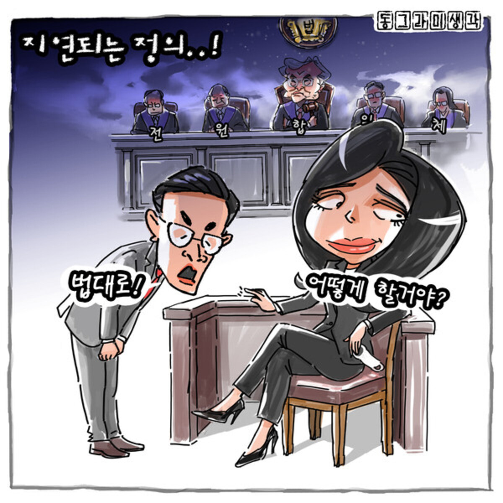
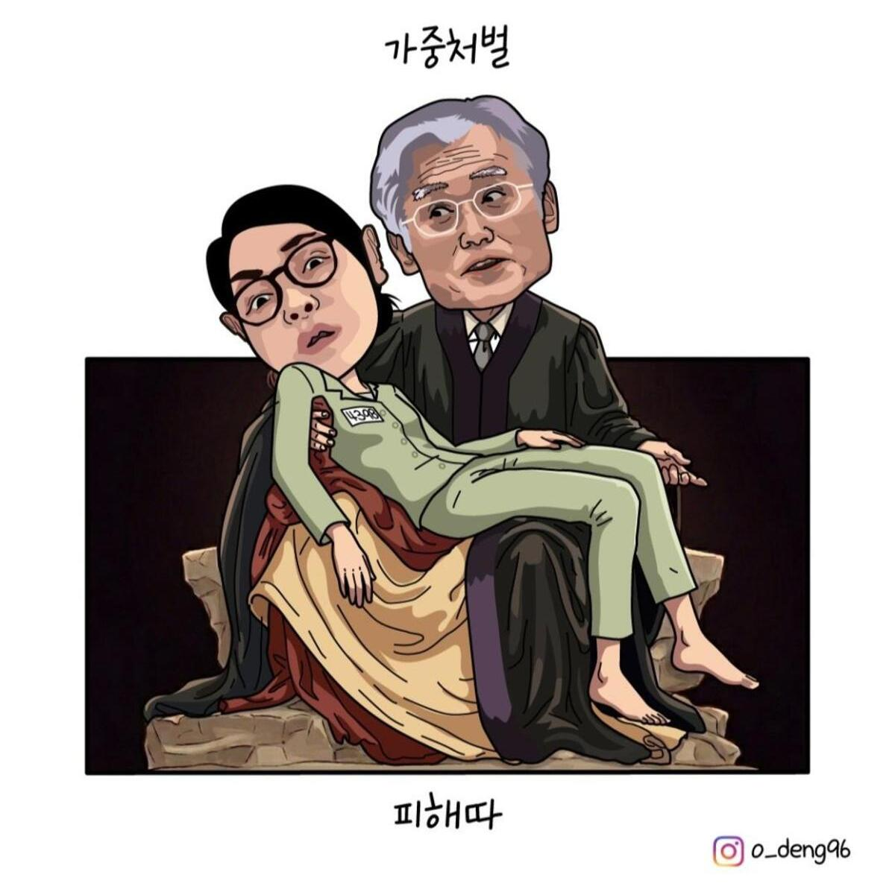
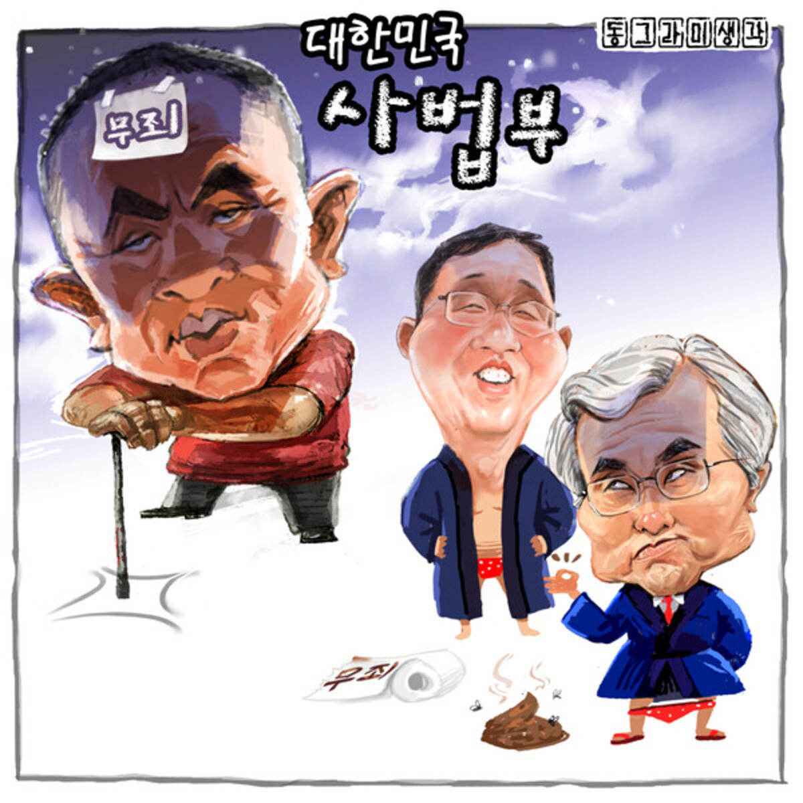

(8. 21) 8月19日に買ったSIMカードの有効期限切れにともない今後は以前と同様下記を通して近況をお知らせします。私がこのようにするのはSIMカードが使えた期間に作っていたページ(https://anissatta.github.io/l2/)には画像や動画が含まれているので低速モードだとページを読み込むことが出来ず、自分で書いたものが確認出来ないからです。
https://anissatta.github.io/l/



26. 8. 21
下記の去年の記事の写真には「(서울=연합뉴스) 도이치모터스 주가조작과 명태균 공천개입, 통일교 청탁·뇌물 수수 의혹 혐의 등으로 구속기소 된 김건희 여사가 3일 서울 서초구 서울중앙지방법원에서 열린 자본시장법 위반 혐의 결심 공판에 출석해 있다. 2025.12.3 [사진공동취재단] photo@yna.co.kr」との説明があります。この写真は去年撮られたものです。
(25. 12. 3) [일지] 민중기 특검팀 출범부터 김건희 구형까지
https://www.yna.co.kr/view/AKR20251203175400004
下記の今日の初公判についての記事に使われている写真には説明がないものの先の去年撮られたものと瓜二つです。
(26. 8. 21) '정당법 위반' 김건희·한학자 모두 혐의 부인…쟁점 떠오른 '직접 증거'
https://m.dailian.co.kr/news/view/1680751/정당법-위반-김건희한학자-모두-혐의-2026
こちらは「김건희, 박성재 재판 출석 증언」ときちんと他の裁判の写真を流用したと分かるようにしているものの、日本の方々は多分分からないと思います。
(26. 8. 21) '통일교 집단가입' 김건희 첫 공판…"범행 증명 안돼" 혐의 부인
https://www.koreancenter.or.kr/news/articleView.html?idxno=1398233
これは今年の4月に撮影された写真です。「(서울=연합뉴스) 김건희 여사가 13일 서울 서초구 서울중앙지법 형사합의33부(이진관 부장판사) 심리로 열린 박성재 전 법무부 장관의 내란 중요임무 종사 혐의 사건의 속행 공판에 증인으로 출석해 증언하고 있다. 2026.4.13 [서울중앙지법 제공. 재판매 및 DB 금지] photo@yna.co.kr」との説明があります。
(26. 4. 13) 재판부 지적에 마스크 벗은 김건희 "尹, 계엄 사전 얘기 안 해"(종합)
https://www.yna.co.kr/view/AKR20260413086751004
他にもこういった例はあるのでしょうが、とりあえずこれまでに公開された金建希の法廷での映像を下記に示しますから、これらを参考にしてみて下さい。
(2025/9/24) 株価操作等事件 初公判
https://youtube.com/shorts/1XF8TtYoU64
https://youtube.com/shorts/1Ij0qBSjATE
(2025/11/19) 株価操作等事件 第10回 公判
https://www.youtube.com/live/frWFHrD6Xpc
(2025/12/3) 株価操作等事件 1審 結審公判
(2026/1/28) 株価操作等事件 1審 宣告公判
(2026/4/13) 金建希が被告人として出席した公判
https://youtube.com/shorts/hFzLnjtKMao
(2026/4/30) 株価操作等事件 2審 宣告公判 (33分あたりでズームアップされます)
(2026/6/26) 賣官賣職事件 1審 宣告公判
https://youtube.com/shorts/GYMaM3t99Eg
これらも参考にして下さい。
(25. 9. 24) [속보] 헌정사상 첫 ‘전직 영부인 형사재판’…김건희, 혐의 부인 속 첫 재판 종료
https://m.mk.co.kr/news/business/11428010
(26. 6. 26) ‘매관매직’ 김건희 1심 징역 7년…2억9천만 원 금품 모두 인정
https://news.kbs.co.kr/news/mobile/view/view.do?ncd=8595704
(26. 7. 29) 김건희 '매관매직' 2심서도 혐의 부인…9월 22일 선고
https://www.yna.co.kr/view/AKR20260729172900004
古い記事ですが参考になると思うので一度読んでみて下さい。
증거로 제출된 영상을 법정에서 트는 일은 흔합니다. 하지만 일반인 방청객은 물론 언론의 촬영도 제한되죠. 게다가 대통령실 CCTV는 군사상 비밀입니다. 특검은 대통령경호처에 비밀 공개 허가를 요청하면서 특검법에 근거해 영상 중계까지 요청했습니다. 대통령을 말리지 않고 책임을 저버린 한 전 총리와 여러 국무위원들 모습이 공개될 수 있던 건, 재판 중계를 규정해둔 특검법 덕분인 겁니다. 특검법에 따른 재판 중계는 이렇게 이뤄집니다. 특검 또는 피고인 측이 신청을 하면, 재판부에서 허가 여부를 정합니다. 그 뒤 법원 차원에서 촬영을 한 뒤 녹화본을 기자들에게 제공합니다. 법률을 토대로, 언론을 통해서 재판 중계가 이뤄지는 겁니다. 김건희 씨 재판은 벌써 네 번째 공판을 마쳤습니다. 그런데, 김 씨가 법정에 들어오는 모습이 짧게 공개된 것을 제외하고는 '재판 중계'가 이뤄진 적은 단 한 번도 없습니다. 특검팀에 신청을 하지 않는 이유를 물었지만 별다른 설명은 없었습니다. 전 국민이 피해자인 내란 사건에 비해 개인의 비위를 다루는 김건희 씨 재판은 알 권리 보장의 필요성이 상대적으로 낮아서일까요. 내밀한 사적 내용이 공개될 가능성 등에도 재판 중계가 필요한 이유는 무엇일까요?
(25. 10. 26) 김건희 재판은 '중계 0번' 왜? 법정에도 '재판 CCTV' 달린다 [서초동M본부]
https://imnews.imbc.com/newszoomin/newsinsight/6768883_29123.html
下記は今日の政党法違反事件の初公判についての記事ですが、公判の映像が公開されたのかは分かりません。後で詳しく調べてみます。(記事に使用されているのは金建希と韓鶴子の写真を合成したものですね)
서울중앙지법 형사합의27부(부장판사 조형우)는 오늘(21일) 정당법 위반 혐의로 기소된 김 여사와 한 총재, 정원주 전 통일교 총재비서실장, 윤영호 전 통일교 세계본부장, 건진법사 전성배 씨에 대한 첫 공판을 열었습니다. 김 여사도 오늘 법정에 직접 출석했습니다. (中略) 재판부는 다음 달 18일까지 증인신문을 진행한 뒤 10월부터 피고인 신문을 이어갈 예정입니다.
김건희·한학자 ‘통일교 당원 가입’ 첫 재판…모두 혐의 부인
https://news.kbs.co.kr/news/mobile/view/view.do?ncd=8642681
下記記事も今日の政党法違反事件の初公判についてのものです。
'통일교 집단 가입' 김건희·한학자 1심 첫 공판
https://m.ytn.co.kr/news_view.php?key=202608210145197930
下記の一覧にも今日開かれる公判が「1차공판」(初公判)であると記されています。被告人は金建希・韓鶴子(김건희·한학자)を含め計4名です。
▲오전 10시10분 ‘통일교 집단 입당 혐의’ 김건희·한학자·윤영호·정원주 1차공판, 서울중앙지법 형사27부, 509호
[오늘의 주요일정]법조(8월21일 금요일)
https://mobile.newsis.com/view/NISX20260820_0003756642
下記は今日の金建希の政党法違反事件の初公判についての記事です。これは元々8月14日に初公判が予定されていたものの、当日に何の報道もなく公判が開かれなかったという例の事件です。以前も述べたように「교회와 신앙」は今日のが初公判であるとは報じていましたが。( https://www.amennews.com/news/articleView.html?idxno=32530 ) ただこの記事には今日の初公判の様子が写真や映像として報じられるかについては述べられていません。現時点で金建希の複数の事件のうち初公判の映像が公開されているのは株価操作や統一教会金品収受、世論調査収受等の容疑から成る現在大法院(最高裁判所)が審理を怠っている事件のみだと記憶しています。また今日初公判がある事件の被告人の一人である韓鶴子 統一教会総裁が被告人である事件の公判の映像は一切公開されていません。今後過去の金建希の別の事件の映像を政党法違反事件の初公判の映像だと偽って紹介する事例や、政党法違反事件の初公判のついての報道に過去のそういった事件の映像を使用する事例が出てくるものと思われますが、それらをご覧になる際には「韓鶴子が同じ法廷内にいるか」をチェックポイントとしてみて下さい。韓鶴子の容姿についてはGoogle等にて調べてみることが出来ます。(ただ今日韓鶴子が出廷しない可能性もあるのでその場合はそういった報道が出てきてから対策を行います)
세계평화통일가정연합(통일교) 교인들을 국민의힘 당원으로 집단 가입시켰다는 혐의로 기소된 김건희 여사와 한학자 통일교 총재, 건진법사 전성배 씨 등의 첫 공판이 21일 열린다. 서울중앙지법 형사합의27부(우인성 부장판사)는 이날 오전 김 여사와 한 총재 등의 정당법 위반 혐의 사건 첫 공판기일을 진행한다. 지난해 11월 민중기 특별검사팀(김건희 특검)이 기소한 지 287일 만이다.
(8. 21) '통일교 집단 입당' 김건희·한학자 첫 공판…기소 9개월만
https://news.tf.co.kr/read/life/2356323.htm
26. 8. 20
下記は金建希についてのドキュメンタリー映画の予告編です。これで何となく韓国でどのようなイメージが持たれているかお分かりになるかと思います。
Google等の検索エンジンに「김건희」(金建希)や「전원합의체」(全員合議体)といったキーワードを入力しても、韓国の最高裁判所である大法院が金建希の事件について審理を行ったり判決を下したといった情報は出てこないと思います。また以前も述べたように尹前大統領の夫人である金建希に対する最高裁判決が出た場合、日本や他の国々でも報道されるはずです。皆様は韓国の最高裁判所の長が金建希だけ特別扱いするようなおかしなことをする訳がないと思われるでしょうが、金建希や韓鶴子に関しては韓国の裁判所や報道機関がどこかおかしいというのは確かなことだと思います。下記記事によると今日ソウル中央地方法院(地方裁判所)の検事5名が現在大法院が放置中の金建希の事件の1審裁判を担当したさい、この事件の容疑の一つである(ドイツモータース)株価操作容疑を不正に無罪として処理した容疑で起訴されたそうです。容疑の内容は下記引用にあるように虚偽公文書作成•行使(허위공문서 작성·행사)、職権濫用 権利行使妨害(직권남용 권리행사방해)、請託禁止法違反(청탁금지법 위반)、職務遺棄(직무유기)等だそうです。
권창영 2차 종합특별검사가 김건희 여사의 ‘도이치모터스 주가조작’ 사건을 부정하게 무혐의 처리한 혐의로 이창수 전 서울중앙지검장과 당시 수사팀 검사 등 5명을 재판에 넘겼다. 종합특검은 20일 이창수 전 서울중앙지검장과 당시 수사팀이었던 최재훈 전 서울중앙지검 반부패수사2부장, 서민석 전 반부패수사2부 부부장 등 검사 5명을 허위공문서 작성·행사, 직권남용 권리행사방해, 청탁금지법 위반, 직무유기 등의 혐의로 불구속 기소했다고 밝혔다.
[속보]종합특검, ‘김건희 도이치 무혐의’ 전 서울중앙지검장 등 검사 5명 기소
https://www.khan.co.kr/article/202608201224011
https://m.news.nate.com/view/20260820n16206
ちなみに1審で金建希の株価操作容疑を無罪としたソウル中央地方地裁の判事らは今日このように起訴されたのですが、同じ事件の2審でこの株価操作容疑を有罪と認定したソウル高裁の申宗旿(신종오 / シン・ジョンオ / Shin Jong-oh)判事は裁判所の庁舎内で不審な死を遂げています。私はこれがずっとおかしいと思っていましたが、今日のソウル中央地方地裁の判事らが起訴されたという記事を読んでやはり何か恐ろしく汚れたものが韓国の司法に影響を及ぼしているのではないかと思いました。
金建希夫人の二審で一審より重い判決言い渡したソウル高裁判事（55）、遺体で発見
https://www.chosunonline.com/m/svc/article.html?contid=2026050680064
法律新聞の下記記事にも今日大法院で全員合議体の審理が行われるとの記載はありませんでした。
▷‘내란우두머리 등 혐의’ 등 윤석열 전 대통령 외 7명 항소심 11차 공판 -오전 10시, 서울고법 ▷‘독점규제및공정거래에관한법률위반 혐의’ 등 ‘LH 부당입찰 사건’ 관련 케이디엔지니어링건축사 사무소 외 49명 16차 공판 -오전 10시, 서울중앙지법 ▷‘독점규제및공정거래에관한법률위반 혐의’ 등 에이치디현대오일뱅크 주식회사 외 7명 1차 공판 -오전 11시 10분, 서울중앙지법 ▷‘특수공무집행방해 등 혐의’ 박종준 전 대통령경호처장 외 3명 항소심 1차 공판 -오후 2시, 서울고법 ▷‘사기 등 혐의’ 주식회사 씨피글로벌 비상장주식 투자 사기 사건 관련 최성원 외 32명 항소심 선고 -오후 2시, 서울고법 ▷HD현대중공업-대한민국 영업비밀침해금지 등 가처분 사건 항고심 1차 심문 -오후 4시 30분, 서울고법
【오늘의 법조】 2026년 8월 20일
https://www.lawtimes.co.kr/news/articleView.html?idxno=225064
議会新聞の本日の日程の法曹の部分はNewsisのと同様です。
▲오전 10시 '12·3 비상계엄' 내란 우두머리 등 혐의 윤석열 전 대통령 외 7명 항소심 6차 공판준비기일, 서울고법 형사12-1부, 417호 ▲오후 2시 '윤석열 전 대통령 체포방해 혐의' 박종준 전 대통령경호처장 외 3명 항소심 1차공판, 서울고법 형사1부, 311호
오늘의 주요 일정 8. 20. (목)
http://www.icouncil.kr/news/articleView.html?idxno=57390
下記は今日開かれる裁判の一覧ですが、金建希(김건희)の名はどこにも見当たりません。
▲오전 10시 '12·3 비상계엄' 내란 우두머리 등 혐의 윤석열 전 대통령 외 7명 항소심 6차 공판준비기일, 서울고법 형사12-1부, 417호
▲오후 2시 '윤석열 전 대통령 체포방해 혐의' 박종준 전 대통령경호처장 외 3명 항소심 1차공판, 서울고법 형사1부, 311호
[오늘의 주요일정]법조(8월20일 목요일)
https://mobile.newsis.com/view/NISX20260819_0003754816
金建希の上告審(3審)については以前紹介した法院(裁判所)の事件検索機能を使って調べてみることが出来ます。下記手順の法院名を「대법원」、事件番号を「2026도6826」にそれぞれ置き換えて実行してみて下さい。実行後「진행내용」をクリックし下の方を見ていくと「2026. 8. 19 피고인 김ㅇㅇ 구속기간 갱신 결정」といった文言があるかと思いますが、以前出ていた起訴についての記事に「김건희 불구속 기소」等の見出しがついていたのは丁度この時が拘束期間更新のタイミングだったからだと思います。
https://anissatta.github.io/home-project/kim3/
金建希の大法院(最高裁)判決についてはっきりとは分からないものの、大法院の裁判官(대법관; 大法官)の欠員が発生していることないし将来の欠員を防ぐプロセスが原因で遅れている可能性もあるかと思います。
조희대 대법원장은 어제(18일) 손봉기 대구지법 부장판사와 김성수 서울고법 부장판사를 이재명 대통령에게 임명 제청했습니다. 손 부장판사는 지난 3월 퇴임한 노태악 전 대법관, 김 부장판사는 다음 달 퇴임하는 이흥구 대법관의 후임 후보인데요. 다만 조 대법원장은 어제 청와대를 방문해 이 대통령을 만나지는 않고, 서면으로 제청한 것으로 확인됐습니다. 통상 대법원장은 청와대에서 대통령을 만나 최종 협의를 거친 뒤 대법관 제청 대상자를 발표해왔는데, 관례를 깬 겁니다. 청와대와 대법원 사이 협의가 잘 이뤄지지 않았다는 게 법조계 시각입니다. 특히 노 전 대법관 후임인 손 부장판사에 대해 최종 합의가 되지 않은 것으로 전해집니다. (中略) 만약 이 대통령이 제청을 수용하고 임명동의안을 국회에 제출하면 인사청문회 등 대법관 후임 인선 절차가 본격적으로 시작됩니다. 다만 이 대법관 퇴임까지 3주도 채 남지 않아 아무리 빠르게 절차를 진행해도 한동안 '2인 공석'은 불가피할 거로 보입니다. 이에 따라 대법관 전원이 함께 심리하기로 했던 김건희 씨 사건 등 특검 사건 선고 일정이 지연될 수 있다는 전망도 나오는데요. 이 때문에 법원 내부적으론 청와대와 협의가 잘 이뤄지지 않던 상황에서 대법관 공백으로 인한 국민 피해를 막기 위해 조 대법원장이 결단한 거란 분석도 나옵니다.
(8. 19) 조희대, 대법관 '서면 제청' 파장 계속...배경은?
https://m.ytn.co.kr/news_view.php?key=202608191747069550
この引用に「만약 이 대통령이 제청을 수용하고 임명동의안을 국회에 제출하면 인사청문회 등 대법관 후임 인선 절차가 본격적으로 시작됩니다. 다만 이 대법관 퇴임까지 3주도 채 남지 않아 아무리 빠르게 절차를 진행해도 한동안 '2인 공석'은 불가피할 거로 보입니다. 이에 따라 대법관 전원이 함께 심리하기로 했던 김건희 씨 사건 등 특검 사건 선고 일정이 지연될 수 있다는 전망도 나오는데요」とありますから、少なくとも近いうちに金建希の大法院判決が下されることはないということが理解されると思います。「どんなに速く(大法官後任選出の)過程を進めたとしても大法官が2名空席である状態が生じるのは不可避となることと思われます」(아무리 빠르게 절차를 진행해도 한동안 '2인 공석'은 불가피할 거로 보입니다)、「これに伴い大法官全員が審理するとしていた金建希の事件等の特検(특검; 특별 검찰)が担当する事件の宣告日程が遅延する可能性もあるとの見方も出ています」(이에 따라 대법관 전원이 함께 심리하기로 했던 김건희 씨 사건 등 특검 사건 선고 일정이 지연될 수 있다는 전망도 나오는데요)とあるからです。
26. 8. 17
下記記事によると昨日議員達が下記引用にあるような文書を通し、「金建希の事件を含む国民的関心の高い事件を全員合議体(大法廷ないしfull bench)に回付し、これらの事件に対する判決を延期したことは大法院長(最高裁判所長)の職務遺棄である」との批判を行ったとのことです。ここには大法院長に対する「내란 및 국정농단 사범들의 구체적인 전원합의체 심리 기일과 최종 선고 시점을 국민과 국회 앞에 명확히 제시하라」(内乱の当事者および国政を私利の為に利用した当事者(金建希)の具体的な全員合議体 審理期日と最終宣告の時期を国民や国会に明確に提示せよ)といった文言や、「대법원 심리 지연으로 피고인들이 석방될 것이라는 국민적 우려가 크다」(大法院の審理遅延により被告人らが(拘置所から)釈放されるのではとの国民的憂慮が大きい」、「석방 기한 전 상고심 선고를 명확하게 약속해야 한다」(釈放期限前の上告審宣告を明確に約束せねばならない)との文言がありますから、金建希等の事件の審理期日がまだ未定であることがお分かりになるかと思います。
법사위원장인 민주당 서영교 의원과 민주당·혁신당·진보당 의원들은 이날 입장문을 내고 "불법 비상계엄에 가담·방조한 한덕수와 이상민, 국정농단 범죄를 저지른 김건희 피고인 심리를 대법원이 전원합의체로 회부했다"며 이같이 말했다. 범여권 법사위원들은 "특검법에서 규정한 상고심 3개월 이내 판결 의무 조항은 국가적 혼란을 최소화하고 신속한 국법 질서의 회복이라는 국민적 명령이 담긴 조문"이라고 설명했다. 이어 조 대법원장에게 "내란 및 국정농단 사범들의 구체적인 전원합의체 심리 기일과 최종 선고 시점을 국민과 국회 앞에 명확히 제시하라"고 했다. 그러면서 "대법원 심리 지연으로 피고인들이 석방될 것이라는 국민적 우려가 크다"며 "석방 기한 전 상고심 선고를 명확하게 약속해야 한다"고 요구했다. 이들은 또 "조 대법원장이 헌법이 부여한 대법관 제청 의무를 수개월째 방기하고 있다"며 "사법부가 대법관 자리를 내팽개치고 있는 직무 유기는 더는 사법부의 독립을 운운할 자격조차 없음을 스스로 보여주는 것"이라고 비판했다. 이어 "대법관 제청은 대법원장의 권리가 아니라 헌법상 책무"라며 "국민 앞에 부끄럽지 않으려면 지금이라도 대법관을 제청하라"고 말했다. 이들은 "조 대법원장의 '책임'(직무유기)은 대한민국 역사상 최초의 대법원장 탄핵과 법왜곡죄 처벌이 될 것"이라며 "국민의 인내는 한계에 이르렀다. 한발 더 나아간 사법개혁만이 답"이라고 강조했다.
(8. 16) 與 법사위 "조희대, '김건희 재판지연' 직무유기 책임 묻겠다"
https://www.yna.co.kr/view/AKR20260816030100001
26. 8. 16
下記は「교회와 신앙」(amennews.com)という韓国のキリスト教系のニュースサイトの記事ですが、やはり韓鶴子等の政党法違反事件の初公判は2026年8月21日に開かれると述べています。ただここで韓鶴子とともに被告人として挙げられているのは統一教会の関係者2名と、統一教会と金建希を橋渡しした전성배(Geonjin)だけです。ただ先の日程に「韓鶴子ほか4名」とあったので、この記事が言及していない1名が金建希だとお分かりになるでしょう。(よく分かりませんが、統一教会の信徒からすると金建希のような人物との関わりは好ましくないのかも知れません)
통일교 한학자 교주가 정당법 위반 혐의로 별도의 재판을 받게 됐다. 서울중앙지법 형사합의27부(부장판사 우인성)는 올해 1월부터 총 6번에 대한 공판준비기일을 모두 마무리하고 2026년 8월 21일 1차 공판기일을 연다고 밝혔다. 이번 정당법 위반 재판에는 통일교 2인자 정원주 전 비서실장, 전 세계본부장 윤영호 씨, 건진법사 전성배 씨도 함께 재판을 받게 됐다.
(8. 16) 통일교 교주 한학자, 정당법 위반 혐의로 별도 재판 돌입
https://www.amennews.com/news/articleView.html?idxno=32530
以前紹介したこの事件の起訴時の記事には被告人の名が記されていますから、これを先のamennews.comの記事と比べてみて下さい。
통일교 교인들의 국민의힘 집단 당원 가입 의혹과 관련해 추가로 재판에 넘겨진 김건희 여사 사건을 서울중앙지법 형사합의27부(우인성 부장판사)가 맡는다. 11일 법조계에 따르면 중앙지법은 정당법 위반 혐의로 추가 기소된 김 여사와 통일교 한학자 총재, 전 세계본부장 윤영호씨, 전 총재 비서실장 정모씨, 건진법사 전성배씨 사건을 이같이 배당했다.
(25. 11. 11) '통일교 집단입당' 김건희 추가기소건 권성동·한학자 재판부로
https://www.yna.co.kr/view/AKR20251111043400004
ハングルが読めない方の為に対照表を作ってみました。これとは別に、どちらの記事もこの事件が「정당법 위반 혐의」(政党法違反容疑)に関するものであり、これを「서울중앙지법 형사합의27부」が担当し、その裁判部は「우인성」が部長判事であると述べていますから、両方の記事が同じ事件について述べているとお分かりになると思います。
| amennews.com | yna.co.kr | 日本語訳 |
|---|---|---|
| 통일교 한학자 교주 | 통일교 한학자 총재 | 韓鶴子 総裁(amennewsは「教主」と表記しています) |
| 정원주 전 비서실장 | 전 총재 비서실장 정모씨 | 総裁の前秘書室長 정원주 (ynaは정某(모)と名を伏せています) |
| 전 세계본부장 윤영호 씨 | 전 세계본부장 윤영호씨 | 前世界本部長 윤영호 |
| 건진법사 전성배 씨 | 건진법사 전성배씨 | 건진(Geonjin)法師こと 전성배 |
| ? | 김건희 여사 | 金建希 |
下記の傍聴案内もよく読んでみて下さい。
주요사건(형사) 방청안내[2025고합1506 / 2026. 8. 21.(금) 10:10 공판기일]
https://seoul.scourt.go.kr/dcboard/new/DcNewsViewAction.work?seqnum=20677&gubun=41
下記は今週韓国で開かれる裁判の日程ですが、これによれば21日に例の政党法違反事件の初公判が予定されています。「1차 공판」とは初公判のことです。以前「8月14日に初公判がある」というニュースを紹介しましたが、やはり21日に延期されたので間違いないと思います。
21일(금)
서울중앙지법, ‘정당법위반 혐의’ 한학자 통일교 총재 외 4명 1차 공판(오전 10시 10분)
拙訳: 21日(金)
ソウル中央地方法院(지법は「지방법원」の略です), 「政党法違反容疑」韓鶴子 統一教会(韓国では「統一教」(통일교)といいます) 総裁ほか4名(この「ほか4名」には金建希も含まれています) 第1回公判 (午前10時10分)
(이번주 법조 일정) 8월 17일~8월 21일
https://www.lawtimes.co.kr/news/articleView.html?idxno=224927
26. 8. 15
昨日の뉴스1の記事と似通っていますが、最高裁が審理している金建希の事件について述べられていたので下記記事を引用しておきます。
'명태균 여론조사'와 함께 도이치 모터스 주가조작 혐의, 통일교 금품수수 혐의를 받고 있는 김 씨는 당초 지난달 16일 상고심 선고를 앞두고 있었지만, 특검의 선고 연기 요청에 따라 24일로 한 차례 연기된 바 있습니다. 이후 대법원은 소부 선고를 하루 앞두고 사건을 전원합의체에 회부하기로 결정했고, 선고기일은 아직 지정되지 않았습니다.
(拙訳) 「明太均より世論調査を無償で受け取った疑惑」だけでなくドイツモータース株価操作容疑や統一教会より金品を受け取った容疑をかけられている金建希氏は(訳注: 先に述べた「1つの事件にて3つの容疑が扱われている」状態を表しています)当初先月16日に上告審の宣告を控えていましたが、特検(訳注: 특검; 특별 검찰の略)の宣告延期要請により先月24日へと一度、延期されています。 以後大法院(最高裁判所)は小部(訳注: 소부は先日述べたように英語だとpanelや裁判部といった表現になるかと思います)の宣告を一日前に控え(つまり先月23日、)この事件を全員合議体(大法廷ないしfull bench)に回付することを決定し、(再延期後の)宣告期日はまだ指定されていません。
(8. 14) 김건희 대법 전합 회부 후 특검 첫 의견서 제출‥"윤석열·오세훈 유죄 근거 적용돼야"
https://imnews.imbc.com/news/2026/society/article/6844814_36918.html
昨日(8月14日)予定されていた金建希の政党法違反事件の初公判についての情報はまだ出ていないようなので議会新聞に記載されているこの日の主要裁判の一覧を下記に引用します。金建希(김건희)ないし韓鶴子(한학자)の名はここにも記されていません。
(8. 14)
▲오전 10시 '주가 조작 혐의' 삼부토건 전직 임원 이일준 전 회장·이응근 전 대표·이기훈 29차공판, 서울중앙지법 형사34부, 408호
▲오전 10시 '일반이적 등 혐의' 윤석열 전 대통령 외 3명 항소심 2차공판, 서울고법 형사1부, 311호
▲오전 10시 '관저 이전 의혹' 김대기 전 대통령실 비서실장 외 3명 3차공판, 서울중앙지법 형사36부, 358호
▲오전 10시10분 '내란선동 등 혐의’ 황교안 전 국무총리 2차공판, 서울중앙지법 형사35부, 405호
▲오후 2시 '1억 공천헌금 의혹' 강선우 무소속 의원·김경 전 서울시의원 6차공판, 서울중앙지법 형사1단독, 513호
▲오후 2시30분 '명예훼손 등 혐의' 김병헌 위안부법폐지국민행동 대표 4차공판, 서울중앙지법 형사27단독, 508호
오늘의 주요 일정 8. 14. (금)
http://www.icouncil.kr/news/articleView.html?idxno=57369
1月14日に開かれた同じ裁判の公判準備期日については下記の通りNewsisの日程にも記されていましたから、この裁判が何らかの理由で非公開にされている訳ではないとお分かりになるかと思います。
▲오후 2시20분 ‘통일교 집단 입당 혐의’ 김건희·한학자·윤영호·정원주 1차 공판준비기일, 서울중앙지법 형사27부, 509호
[오늘의 주요일정]법조(1월14일 수요일)
https://mobile.newsis.com/view/NISX20260113_0003475717
Newsisの8/14の日程は昨日示した通りです。
[오늘의 주요일정]법조(8월14일 금요일)
https://mobile.newsis.com/view/NISX20260813_0003748365
そもそもこの事件が起訴されたのは下記の記事によれば2025年11月9日ですから、昨日予定されていた初公判というのは起訴から9ヶ月以上経った後のものです。この事実だけでもこの裁判が公判準備の過程で遅延していたと推測することが可能かも知れません。
특검팀은 지난 9일 통일교 측이 2023년 3월 국민의힘 전당대회를 앞두고 특정 후보를 당 대표로 밀기 위해 교인들을 대거 입당시켰다는 의혹과 관련해 이들을 추가로 기소했다.
(25. 11. 11) '통일교 집단입당' 김건희 추가기소건 권성동·한학자 재판부로
https://www.yna.co.kr/view/AKR20251111043400004
金建希の現在進行中の裁判は昨日述べたように3つです。下記は数ヶ月前の記事ですが、この数は変わっていないはずです。(尹前大統領については特殊公務執行妨害の裁判が最高裁判決まで進み終結しましたが、先日新たに起訴されたので数は変わりません) 紛らわしいことに金建希の1つめの裁判(最高裁判所で審理中)は3つの容疑に関するものですが、このことが皆様にどのような誤解を与えたかはよく分かりません。
올해 상반기 내 윤석열 전 대통령 부부의 항소심 선고가 줄을 이을 예정이다. 1∼2심을 합쳐 윤 전 대통령은 8개, 김 씨는 3개의 재판을 받고 있다.
(26. 4. 28) 올 상반기 진행 중인 윤석열·김건희 재판 모두 몇 건?
https://www.mk.co.kr/news/society/12029992
ちなみに尹前大統領の1つめの最高裁判決については下記の通り日本でも報じられています。金建希の最高裁判決が出た場合にも必ず報道されるはずです。(日本だけでなく欧米やアジアの諸言語の媒体が、多くは速報の形で報じるでしょう)
韓国最高裁は９日、「非常戒厳」宣言を巡る捜査を妨害したとして、特殊公務執行妨害などの罪に問われた前大統領の尹錫悦被告（６５）について、被告側・特別検察官側双方の上告を棄却した。４月に懲役７年を言い渡した二審判決が確定した。 尹被告は複数の裁判を抱えるが、最高裁が判断を下すのは初めて。一審は懲役５年としたが、二審は一審で無罪だった罪の一部も有罪と認め、懲役７年の判決を下した。
(26. 7. 9) 韓国・尹錫悦前大統領、懲役７年が確定 戒厳巡る捜査妨害―最高裁
https://www.jiji.com/sp/article?k=2026070900896&g=int
(8. 14)
8月14日に뉴스1が出した記事の末尾に下記の一文がありましたので確認なさって下さい。その下には私の拙い和訳も記しています。
전원합의체 기일은 아직 지정되지 않았다. 대법원 전원합의체의 심리절차에 관한 내규에 따르면 기일은 매월 세 번째 목요일에 진행하는 것이 원칙이다.
(拙訳) 全員合議体(日本でいう大法廷, full bench)の期日はまだ指定されていない。(訳注: こういった期日の指定は裁判所が行い、公開します) 大法院(最高裁判所)全員合議体の審理手続きに関する内規によれば、期日は毎月第3木曜日に開くことが原則である。
[단독]김건희특검, 전합회부 후 첫 의견서…"尹·吳 유죄 근거 적용돼야"
https://www.news1.kr/society/court-prosecution/6259266
26. 8. 14
今日予定されていた金建希の公判は先に述べた通り延期されたと思われますが、もし疑わしいと思われる方がおられたら下記ツールにて8月14日付の記事を一通り調べてみて下さい。今日予定されていたのは(公判準備が終わった後の)初公判ですから、もし実施された場合必ず報道されるはずです。
https://anissatta.github.io/home-project/kim/
(Wifi spot에서) これから金建希の政党法違反事件についての調査を開始します。割と時間がかかるかと思いますので、皆様の側でも下記のツールを使った自主調査を行ってみて下さい。
https://anissatta.github.io/home-project/kim3/
まず下記は本日の日程ですが、ここには金建希(김건희)の公判に関する記述は見当たりません。
[오늘의 주요일정]법조(8월14일 금요일)
https://mobile.newsis.com/view/NISX20260813_0003748365
そこで先のツール( https://anissatta.github.io/home-project/kim3/ )の指示に従って公判期日を調べてみると、8/14のところに「기일변경」(期日変更)というマークが付けられていることが分かります。これが4/30の公判準備期日ですと「속행」(続行)とありますから、何かあったのだなとお分かりになるかと思います。
ではこの一覧の中に「기일변경」は何回登場するでしょうか。25/12/9 (公判準備期日), 26/2/3 (公判準備期日), 26/4/22 (公判準備期日)と、今回の26/8/14 (公判期日)の計4回です。この内先の3つについては延期の旨が報道されていたはずです。ただその際にも事前の報道ではなく、期日当日か翌日以降の事後の報道でした。なおかつこれらの日にはちょうど今日がそうであるようにお祭り騒ぎが発生していたと記憶しています。
まず下記は25/12/9 (公判準備期日)の延期についての記事です。
통일교 교인들의 국민의힘 집단 당원 가입 의혹과 관련해 추가로 재판에 넘겨진 김건희 여사 사건 재판이 9일 열릴 예정이었으나 실무상 문제로 미뤄졌다. 서울중앙지법 형사합의27부(우인성 부장판사)는 이날 오전 김 여사와 통일교 한학자 총재, 건진법사 전성배씨 등이 연루된 정당법 위반 등 혐의 사건의 첫 공판준비기일을 열 예정이었다. 하지만 변호인 측의 기록 열람·복사가 늦어지면서 기일이 연기됐다.
(25. 12. 9) 김건희·한학자 '통일교 집단입당 의혹' 재판 준비기일 연기
https://www.yna.co.kr/view/AKR20251209065400004
この延期された公判準備期日は結局今年1/14に開かれましたが、下記引用にあるように公判準備期日には被告人が出席する必要は無いので金被告人を含む誰も出席しなかったとのことです。記事に使われている写真にも「도이치모터스 주가조작과 명태균 공천개입, 통일교 청탁·뇌물 수수 의혹 혐의 등으로 구속기소 된 김건희 씨가 지난해 12월 서울 서초구 서울중앙지방법원에서 열린 자본시장법 위반 혐의 결심 공판에 출석해 변호인과 대화하고 있다. 2025.12.03. photo@newsis.com」との但し書きがあり、これが別の裁判で2025/12/3に撮影されたものだと分かるようになっています。言うまでもなくこれは以前紹介した映像((2025/12/3) 株価操作等事件 1審 結審公判 ; https://youtu.be/fp-o4Q6ob-A )のキャプチャーです。
서울중앙지법 형사합의27부(부장판사 우인성)는 이날 오후 2시20분부터 정당법 위반 혐의로 기소된 김 여사와 한학자 통일교 총재, 건진법사 전성배씨, 정원주 전 통일교 비서실장, 윤영호 전 통일교 세계본부장의 첫 공판준비기일을 진행했다. 공판준비기일은 정식 공판에 앞서 피고인과 검찰 양측의 입장을 확인하고 향후 심리 계획 등을 정리하는 절차로 피고인의 출석 의무가 없다. 이날 피고인들은 모두 불출석했다.
(26. 1. 14) 김건희 '통일교 집단 입당' 재판 시작…"특검, 무관한 증거 다수"
https://mobile.newsis.com/view/NISX20260114_0003476987
下記の記事が伝えているのは本日(8/14)この事件の公判準備期日ではない(被告人の出席義務がある)本格的な公判が始まる予定だった、ということです。
세계평화통일가정연합(통일교)의 '국민의힘 전당대회 개입 의혹' 사건으로 추가 기소된 김건희 여사에 대한 정식 재판이 오는 8월 14일 시작된다.
(26. 4. 30) 김건희 '통일교 집단 입당' 혐의 정식 재판 8월 시작
https://www.news1.kr/society/court-prosecution/6154487
来週の公判については既に傍聴案内文まで出ています。先の「기일변경」が正しければこれが(第2回ではなく)第1回公判となるはずです。
주요사건(형사) 방청안내[2025고합1506 / 2026. 8. 21.(금) 10:10 공판기일]
https://seoul.scourt.go.kr/dcboard/new/DcNewsViewAction.work?seqnum=20677&gubun=41
暑いのでこの辺にしときますが、昨日の私の説明で金建希の2つの裁判の区別がついた方は、2つめの裁判(1審で懲役7年が出た方)の2審判決は9月に出るとのことですので覚えておいて下さい。(言うまでもなく9月のこれは最高裁判決ではありません。最高裁がこれから判決を下すのは1つめの事件、つまり2審で懲役4年が出た事件についてです) 今日は3つめの裁判が始まると思っていましたが、何も報道が出て来ませんので一旦これで切り上げることにします。(ちなみに3つめの裁判は統一教会の元総裁も被告となっています。皆様はどう思われますか? この3つめの裁判が一向に始まらないのを見るに統一教会がまだ生きているのは確かなことだと思います)
각종 청탁과 함께 고가 금품을 받은 이른바 '매관매직' 혐의로 1심에서 징역 7년을 선고받은 김건희 여사의 2심 선고가 오는 9월 22일 이뤄진다.
(26. 7. 29) 김건희 '매관매직' 2심서도 혐의 부인…9월 22일 선고
https://www.yna.co.kr/view/AKR20260729172900004
26. 8. 13
金建希の大法院判決が近いうちに下されることはないと思われるのでこの判決に合わせて事前に準備していた動画素材を公開することにしました。(下記はその素材を繋いだものです)
https://drive.google.com/file/d/1sXiNEOfeJqxZmG2N2z34enctsWKII803/view?usp=drivesdk
これからWifiが使える所に行って調べてみますが、韓国の全員合議体というのは日本語で大法廷に相当するものかと思います。これが理解できなかった方は大法廷やen bancについて調べてみて下さい。
(Wifi spot에서) 下記は大法院(韓国の最高裁判所)が金建希の事件を全員合議体に回すと発表した当時の記事です。このように英語ではfull benchというようです。下記には述べられていませんが、判例の変更が必要な場合や社会的重要性の高い事件の場合に全員合議体での審理が行われるとのことです。(以前私が使った小部(소부)という言葉は下記のpanelと同義です)
Full bench referrals are typically decided when a ruling by a four-member panel of judges is deemed inappropriate or when there is a difference in opinion within the panel.
(7. 23) Supreme Court refers ex-first lady case to full bench, postpones ruling
漫画の方が分かりやすいかも知れませんが、こんなイメージです:
[동그라미 만평] 김건희의 '자신감'은 어디서 나오는 것일까.
https://www.goodmorningcc.com/news/articleView.html?idxno=450500
下記は別の事件の判決についてのものですが、末尾にて金建希についても述べられています。
(AI翻訳だからか抜けていますが、ここで述べられているのは最高裁判決についてです) The ruling on Kim’s case was originally scheduled for July 16 but was postponed to July 24, and then, on the eve of the ruling, was indefinitely delayed for referral to a full bench session.
Accomplice in 'Deutsche Stock Manipulation' Case Receives Finalized Suspended Prison Sentence and Fine by Supreme Court
https://www.asiae.co.kr/en/article/2026081311491006898
中国語のAI翻訳も引用しておきます。
Kim Geonhee女士案件原定于7月16日进行终审宣判，后曾推迟至24日；在宣判前一天，为移交全体合议庭审理，宣判被无限期延期。
“德意志汽车股价操纵”共犯获刑10个月、缓刑2年及罚金判决获大法院确认
https://www.asiae.co.kr/cn/article/2026081311491006898
金建希の大法院判決について法院の「나의 사건 검색」を使って調べた際に「기일 변경(추정)」となっていたのでこの추정が「推定」の意味だと思っていたのですが、下記によると「추후 지정」(追後指定)の略だそうです。金建希の大法院判決が下される日はまだ発表されていないはずです。
대법원은 23일 오후 언론 공지를 통해 "피고인 김건희의 자본시장법 위반 등 혐의 사건은 전원합의체 회부를 위해 선고기일을 변경·추정(추후 지정)했다"고 밝혔다. 추정이란 기일을 변경·연기하면서 다음 기일을 지정하지 않는 것을 말한다. 김건희 여사 상고심 선고기일은 당초 16일로 잡혀있었으나, 민중기 특별검사팀의 연기신청이 받아들여져 24일로 미뤄진 상태였다. 이례적으로 선고를 하루 앞두고 전합 회부를 위해 기일을 재차 연기한 것이다. 상고심 선고 전날 전합 회부는 처음인 것으로 알려졌다.
(7. 23) '김건희 상고심' 대법 전원합의체 회부…선고 전날 이례적 연기(종합2보)
https://www.yna.co.kr/view/AKR20260723142452004
恐らく一回目の期日変更(7/16 → 7/24)については日本でも報道されたのではないかと思いますが、二回目の期日変更(7/24 → 未定)について直接言及している日本語の記事は私が知る限り下記の一件のみです。恐らくこのことが原因で噂が流れているのだと思いますが、皆様に考えていただきたいのは「もし二回目の期日変更が行われておらず、韓国最高裁が(有罪か無罪かの)判決を下したなら日本のどのメディアもそれを取り上げたのではないか」ということです。
大法院は２３日、２４日午後２時に予定していた金被告の判決言い渡し期日を延期すると明らかにした。当初は大法官４人で構成される第二小法廷（主審・朴英在大法官）が判決を言い渡す予定だったが、前日になって全員合議体への付託が決まり、判決期日も無期限で延期された。
(7. 24) 大法院、金建希氏の上告審を全員合議体に 判決言い渡し延期
https://www.donga.com/jp/article/all/20260724/6319672/1
金建希について現時点で下されている判決は①裁判Aの1審判決(懲役1年8ヶ月)、②裁判Aの2審判決(懲役4年)、③裁判Bの1審判決(懲役7年)のみですが、いずれも日本で報道されています。過去に私は裁判Aと裁判Bが混同される可能性について言及しましたが、日本での報道にも「2審判決」といった明確な表記が使われていたり、裁判Aについての報道に必ず「統一教会」の名が登場することから区別は可能だと思います。最高裁判決とは3審判決のことです。皆様にお願いしたいのは金建希の最高裁判決が下されたと皆様がお思いになっている日付があるのでしたら、その日と翌日の新聞を調べてみて下さいということです。図書館には直近数ヶ月分の新聞がファイルに入れられて誰でも閲覧出来るようになっています。
註1: 2つめの記事(懲役4年)には下記の記述がありますから、これが1つめの記事の判決(懲役1年8ヶ月)の続きなのだとお分かりになるかと思います。
1審では懲役1年8カ月の実刑判決を言い渡されていて、裁判所は新たに知人の会社の株価操作に関与したとする資本市場法違反の罪を認定しました。
註2: 3つめの記事(懲役7年)の末尾に下記の記述がありますから、これが先の2つの判決とは別の裁判だとお分かりになるかと思います。また各記事には判決を下した裁判所名も記されています。1審はいずれもソウル中央地方裁判所が担当しています。
金被告は、今回の判決とは別に旧統一教会側から高級ブランドバッグを受け取ったなどとして、2026年4月、ソウル高等裁判所から懲役4年の実刑判決を言い渡され、上告しています。
註1〜註2をまとめると先の2つはある裁判の一連の流れであり、最後のは別の裁判だということになります。私が言っている「大法院判決」や「最高裁判決」、「全員合議体判決」というのは先の2つに続くものとなる未だ下されていない判決です。
(1. 28) 【速報】韓国の尹錫悦前大統領の妻・金建希被告に懲役1年8カ月の実刑判決 旧統一教会から不正に金品を受け取った罪など
https://www.fnn.jp/articles/-/993794
(4. 28) 韓国の金建希前大統領夫人に1審を上回る懲役4年の実刑判決 新たに知人会社の株価操作関与の罪を認定 ソウル高裁
https://www.fnn.jp/articles/-/1037304
(6. 26) 韓国前大統領の妻に懲役7年の実刑判決 貴金属や絵画など没収も ソウル中央地裁「社会的責務を無視し繰り返し金品受領」
https://www.fnn.jp/articles/-/1066439
ついでに尹前大統領の新しい裁判についても紹介しておきます。
With the new indictment, Yoon is standing a total of eight trials in connection with his imposition of martial law in December 2024, his wife's alleged corruption and other offenses. Prior to Wednesday, the number was down to seven after the Supreme Court last month finalized a seven-year prison term for his obstruction of investigators' attempt to detain him following his martial law bid. The latest indictment concerns allegations that Yoon instructed the presidential National Security Office and the foreign ministry immediately after declaring martial law to send messages justifying the emergency order to key nations, including the US, Britain, Japan and members of the European Union.
(8. 12) Special counsel indicts ex-President Yoon over messages justifying martial law
https://m.koreaherald.com/article/10839379
다음에 인용한 자주시보가 낸 기사가 정말이면 제가 살아 있는 동안에 대법원이 김건희에게 판결을 내리는 건 없을 것입니다. 만약 제가 김건희에 대한 대법원 판결을 재밌게 관찰하는 것이 당신과 결혼하기 위한 조건였다면 절망만 있게 보이는데요.
자주시보というのがどういった媒体かは分かりませんが、金建希の大法院判決(の延期)に関する記事が出ていましたので紹介します。この記事も以前紹介した記事と同様「(金建希を刑務所に入れる事ができる)大法院判決の延期により10月に金建希が拘置所から釈放される可能性がある」と述べていますが、更に「풀려나면 자신의 재정, 인맥을 동원해 나머지 재판 등을 쥐락펴락하면서 무죄를 받을 수 있다는 자신감을 갖게 됐을 것이다」と釈放されるだけでなく財産や人脈を動員し法を捻じ曲げ、無罪を獲得する可能性があるとすら述べています。ここでもやはり曺(조)희대大法院長が悪の元凶とされています。
대부분의 사람은 재판에서 검사나 재판부에 불만이 있더라도 항의하거나 따지지를 않는다. 혹여 자기에게 더 불리한 판결이 나올지 모르기 때문이다. 그런데 김건희는 검사와 판사에게 마치 대드는 듯한 모습이었다. 그동안 자신의 재판에서 풀죽은 모습으로 대답하는 태도와 전혀 딴판이었다. 김건희의 이런 태도 변화 배경에는 조희대 대법원장이 있는 것이 아니냐는 해석이 나온다. 왜냐하면 최근 대법원이 김건희의 도이치모터스 주가조작 등의 사건을 전원합의체로 회부했고, 내란범인 한덕수와 이상민 재판도 전원합의체로 회부하면서 기일이 언제 잡힐지 알 수 없기 때문이다. 특검 사건의 신속 처리 규정인 이른바 ‘6·3·3 규정’(1심 6개월, 2심·3심 각 3개월)에 따르면 김건희의 상고심 처리 시한은 2026년 7월 28일까지였다. 그런데 대법원 전원합의체로 재판이 회부되면서 최종 판결일이 기약 없이 미뤄졌다. ‘6·3·3 규정’에 따르면 한덕수는 8월 7일, 이상민은 8월 12일에 최종 판결이 나야 했다. 그런데 조 대법원장이 재판을 전원합의체로 회부하면서 특검법에 따른 신속 처리 규정을 완전히 무너뜨렸다. 조 대법원장이 마음먹기에 따라 재판을 할 수도, 안 할 수도 있는 상황이라 할 수 있다. 현재 김건희는 두 개의 재판에서 징역형을 선고받았다. 징역 4년이 선고된 도이치모터스 주가조작 사건, 명태균 여론조작 사건 등의 2심과 징역 7년이 선고된 ‘매관매직’ 사건 1심이다. 그런데 확정판결 전이기에 김건희는 미결수 신분이다. 김건희의 도이치모터스 주가조작 사건 2심 판결은 4월 28일이었다. 구속 기간 연장은 2개월씩 세 차례 연장이 가능한데, 이미 두 차례 연장이 돼 현재 구속 기한은 8월 28일이다. 한 차례 더 연장해도 10월 말이면 구속 기한 만료이다. 조희대 대법원이 무리해서 김건희에게 무죄 판결을 하지 않더라도, 재판을 하지 않은 채 시간만 끌면 10월 말이면 김건희는 자연스럽게 석방된다. 김건희는 조 대법원장이 자신을 비롯한 한덕수, 이상민의 재판을 전원합의체로 회부한 것을 보면서 자신이 조만간 풀려날 것이라는 생각을 하게 됐을 것이다. 풀려나면 자신의 재정, 인맥을 동원해 나머지 재판 등을 쥐락펴락하면서 무죄를 받을 수 있다는 자신감을 갖게 됐을 것이다. 그래서 법정의 검사나 판사에게 자기 성질대로 하고 싶은 말을 다 뱉어낸 것이라 할 수 있다.
(26. 8. 12) [자주시보] 김건희 태도 돌변 배경에 조희대가 있다?
26. 8. 11
昨日述べた古い写真の使い回しの一例を下記に示します。下記記事は写真の下に「김건희 여사가 4월13일 서울 서초구 서울중앙지법 형사합의33부(이진관 부장판사) 심리로 열린 박성재 전 법무부 장관의 내란 중요임무 종사 혐의 사건의 속행 공판에 증인으로 출석해 증언하고 있다. ⓒ서울중앙지법」との但し書きを入れ、出典と撮影日を明らかにしていますが、こういったことに気付かない方もおられるかと思います。
(26. 8. 10) 발끈한 김건희 “다른 영부인들 다 수사해봤나”
https://www.sisajournal.com/news/articleView.html?idxno=383008
下記は写真の引用元となった4/13の公判についての記事です。
(26. 4. 13) 재판부 지적에 마스크 벗은 김건희 "尹, 계엄 사전 얘기 안 해"(종합)
https://www.yna.co.kr/view/AKR20260413086751004
ちなみにこれは昨日紹介した下記の映像から採られたものだと思われます。
(2026/4/13) 金建希が被告人として出席した公判
https://youtube.com/shorts/hFzLnjtKMao
26. 8. 10
Google等に「김건희」(金建希)というキーワードを入力すると様々な記事が出てきますが、それらの記事に使われている写真が法廷で撮影されたものである場合、下記のいずれかの映像のキャプチャーである可能性が高いと思います。最近出てくる記事の殆どが大法院判決とは無関係ですので私は一切取り上げていません。
(2025/9/24) 株価操作等事件 初公判
https://youtube.com/shorts/1XF8TtYoU64
https://youtube.com/shorts/1Ij0qBSjATE
(2025/11/19) 株価操作等事件 第10回 公判
https://www.youtube.com/live/frWFHrD6Xpc
(2025/12/3) 株価操作等事件 1審 結審公判
(2026/1/28) 株価操作等事件 1審 宣告公判
(2026/4/13) 金建希が被告人として出席した公判
https://youtube.com/shorts/hFzLnjtKMao
(2026/4/30) 株価操作等事件 2審 宣告公判 (33分あたりでズームアップされます)
(2026/6/26) 賣官賣職事件 1審 宣告公判
https://youtube.com/shorts/GYMaM3t99Eg
今日新たに金建希の大法院判決にも関連する、下記のような記事を見つけましたので紹介します。前半では大法院の裁判官の1名が欠員である状態が半年近く続いており、もう1名の裁判官も来月任期満了により退任するが、後任が一向に決まらないという状況が説明されています。そのような状況は下記のような問題をもたらすものの、金建希の事件については「裁判官に欠員が生じている状況でも全員合議体の運用は可能であるものの、正当性等に問題が生じる可能性がある」と述べています。ここには書かれていませんが、以前紹介した曺(조)大法院長にまつわる噂を表現したと思われる漫画( https://m.bobaedream.co.kr/board/bbs_view/best/984521/2/11?cmt=1 )から受けた印象を合わせてみるとやや嫌な予感もします。
연간 약 4만 건의 사건을 처리하는 대법원은 대법관 한 명의 공백도 업무 부담 증가로 이어질 수 있습니다. 소부 운영은 물론 사건 배당도 어려워질 수 있고, 지금도 많은 상고 사건의 적체가 더 심해질 우려가 나옵니다. 이런 가운데 사회적인 주목도가 높은 김건희 씨 사건과 한덕수 전 총리, 이상민 전 장관 사건은 최근 전원합의체에 회부됐습니다. 대법관 전원의 3분의 2, 9명으로도 전합 운영은 가능하지만 선고가 사회에 끼칠 영향이 큰 사건들인 만큼 형식적인 합법성을 넘어 대표성과 정당성을 갖추기 위해선 대법관 공백이 해소돼야 한단 시각이 많습니다.
(8. 9) 대법관 공백 6개월째…조희대, 임명 제청 언제쯤?
https://www.yna.co.kr/view/MYH20260809009000038
もしかすると「大法院の全員合議体は既に金建希の事件に対する判決を下したのではないか」という噂が流れているかも知れませんが、大法院が全員合議体で下した判決については下記のページに記されているようなのでこれをチェックしてみて下さい。これによれば直近の全員合議体判決は7/22に下されており、そこから順に遡ると6/18, 5/21, 3/19, 1/22にそれぞれ全員合議体判決が下されています。いずれも金建希の事件とは異なります。ここで少し気になるのは6/18, 5/21, 3/19, 1/22はいずれも大法院の内規(毎月1回、第3木曜日(ただし第3木曜日が15日である場合翌週の22日)に開かれる; 参照 https://www.yna.co.kr/view/AKR20250426037500004 及び https://ko.wikisource.org/wiki/%EB%8C%80%EB%B2%95%EC%9B%90_%EC%A0%84%EC%9B%90%ED%95%A9%EC%9D%98%EC%B2%B4%EC%9D%98_%EC%8B%AC%EB%A6%AC%EC%A0%88%EC%B0%A8%EC%97%90_%EA%B4%80%ED%95%9C_%EB%82%B4%EA%B7%9C_(%EC%A0%9C510%ED%98%B8) の第6条 )に従っているものの、どういうわけか7/22は水曜日であり内規に合っていないということです。ちなみに金建希の事件が全員合議体に回付されるとの発表があったのはその翌日である木曜日7/23でした。
この7/22の全員合議体判決については下記の記事が該当すると思われますので、参考にしてみて下さい。8月の第3木曜日は20日ですが、その頃にまた何らかの全員合議体判決が出るかも知れません。それが金建希の事件かは分かりませんが、皆様も上の大法院のサイトにアクセスして調べてみて下さい。
다른 업체가 적립해준 제휴 포인트·마일리지로 결제한 금액에 대해 법 개정 이전에 부가가치세를 부과한 처분은 위법하다는 대법원 전원합의체 판단이 나왔다. 다만 법이 개정된 2018년 이후에는 과세가 적법하다고 봤다. 대법원 전원합의체(주심 신숙희·이흥구 대법관)는 22일 GS리테일, 자동차 특화 커머스 업체 오토앤이 과세당국을 상대로 낸 부가가치세 경정거부처분 취소 소송 2건의 상고심에서 만장일치로 이같이 판단했다.
(7. 22) 대법 “2018년 이전 ‘제휴사 포인트 결제액’은 부가세 부과 위법”
https://m.sedaily.com/article/20070593
26. 8. 9
(Wifi spot에서) 下記はAIによる翻訳記事ですので所々誤表記がありますが(「韓学者」は正しくは「韓鶴子」です)、金建希の裁判についても述べられていますから一度読んでみて下さい。私が最近述べていたのは下記の引用の「金夫人のドイツモーターズ株価操作・名太均世論調査・統一教会金品受領疑惑事件は、当初予定されていた判決が延期された後、大法院全員合議体に移された状態である」という部分についてです。この文から読み取れるように「ドイツモーターズ株価操作・名太均世論調査・統一教会金品受領疑惑事件」は3つの容疑から構成された1つの事件です。(裁判A) 「いわゆる『売官売職』疑いで1審で懲役7年の判決を受けた金建希夫人の控訴審初公判は26日に行われる」の事件はここにある通り1審が終わって2審(控訴審)が始まる段階ですので私が述べている大法院判決が延期されたものとは別の事件です。
いわゆる『売官売職』疑いで1審で懲役7年の判決を受けた金建希夫人の控訴審初公判は26日に行われる。裁判所は9月22日判決を目指して迅速に進める計画である。また、統一教会との癒着疑惑の核心である韓学者統一教会総裁の1審判決は31日に予定されている。 ただし、金夫人のドイツモーターズ株価操作・名太均世論調査・統一教会金品受領疑惑事件は、当初予定されていた判決が延期された後、大法院全員合議体に移された状態である。
(26. 8. 6) 法廷休廷終了...来週から『3大特検・総合特検』主要裁判が加速
https://m.jp.ajunews.com/view/20260806184870870
下記は今週開かれる裁判の日程ですが、김건희(金建希)という単語はこの中に無いようでした。皆様もページ内検索の機能を使って調べてみて下さい。(ページ内検索についてご存知でない方はiPhone等お使いの機種に対応した操作方法をGoogle等に聞いてみて下さい) 대법원 1부 선고等、大法院の小部が担当する事件の宣告日は今週もあるようですが、金建希の大法院が審理する事件は全ての小部が関わる全員合議体が担当しますので、これらは無関係です。
(이번주 법조 일정) 8월 10일~ 14일
https://www.lawtimes.co.kr/news/articleView.html?idxno=224575
26. 8. 8
저는 한명숙라는 사람이 누구인지 모르겠지만 다음 기사에 의하면 2010년에 기소된 이 사람의 사건은 이 기사가 나온 2015년 6월 17일경에 상고심에서 전원합의체로 회부된 것 같습니다. ('불법 정치자금을 받은 혐의를 받는 한명숙 새정치민주연합 의원의 상고심이 대법원 전원합의체에 넘겨진 것으로 알려졌습니다') 그리고...
(15. 6. 17) '한명숙 사건' 전합 회부…5년째 심리 정치권 눈치보기
https://mnews.sbs.co.kr/news/endPage.do?newsId=N1003029996
그때부터 두 개월 지난 후 다음과 같이 '불법 정치자금을 받은 혐의로 기소된 한명숙 새정치민주연합 의원(71)에 대한 대법원 선고일이 확정됐다. 상고된 지 22개월 만에 선고일이 확정된 것이다. 대법원 전원합의체는 한 의원의 상고심을 오는 20일 선고하기로 했다고 17일 밝혔다'는데요. 첫 합의기일이 언제 열렸는진 잘 모르지만 이같이 장기간 계속된 재판의 경우에도 전원합의 자체는 오래되진 않고 전원합의 회부부터 두 개월 후 선고가 내렸다는 것이죠.
(15. 8. 17) 대법, ‘선거법 위반’ 한명숙 의원 사건 20일 선고
https://www.khan.co.kr/article/201508171804371
저는 드디어 다음 기사를 읽었는데요 김건희 뿐만 아니라 한덕수와 이상민의 사건도 전원합의체로 심리된다네요. 김건희 사건은 이번 사건보다 이전에 전원합의체로 회부되었기 때문에 우선 심리돼야 합니다. 다음 기사는 이번 사건에 대해 '앞서 김건희 씨의 무상 여론조사 의혹 사건도 선고를 미루고 전원합의체로 넘어간 바 있습니다. 여기에 노태악 전 대법관 후임 제청이 지연되는 등 공백까지 겹쳐 선고가 더 늦어질 수 있다는 관측도 나옵니다'고 하고 있는데요 이 글을 그대로 해석할 때 김건희 사건이 이번 사건이 지연되는 이유의 하나라는 것이죠.
한덕수·이상민 내란사건 대법 전원합의체로…"역사적 평가 필요"
https://www.yna.co.kr/view/MYH20260805022700038
26. 8. 7
私が尹前大統領ではなく金建希についてのみ述べているせいで何か噂が流れているのかも知れませんが(子供達というのはこういったどうでもいい、的外れなことを面白がるものです)、下記記事の見出しにあるように尹前大統領は複数の裁判において合計「∞(無期懲役) + 39年」が宣告されていますから、この方はほぼ確実に封印されると思われるのです。金建希は今のところ「4 + 7年」であり、4年の方の大法院(最高裁)判決が延期されているのでその間に拘束期間が満了して釈放される可能性があることは以前にも述べた通りです。
‘무기징역+39년형’ 윤석열, 남은 재판서 형량 얼마나 늘까
https://www.khan.co.kr/article/202608052105025
26. 8. 6
繰り返しになりますが金建希は複数の刑事裁判にかけられており、その内大法院が審理する3審まで進行しているのは2審で懲役4年が出ている事件のみです。最近1審で7年が出た事件について「2審判決は9月に下される」との報道が出ましたが、これが上の既に大法院まで行っているものとは別の事件であることは猿でも分かると思います。韓国の裁判は3審制です。
26. 8. 3
また最近オルダルク(올다르크)というユーチューバーのような方が「귀하신 김건희 여사님」という発言をし金建希への支持を表したことが話題になっていたのかも知れません。この方が何をされたのかはよく分かりませんが、犯罪者であることは確かだと思います。
올림픽공원 핸드볼경기장에 마련된 개표소를 지킨다며 체육단체 직원들의 사무실 진입을 끝까지 막아선 여성, 이른바 ‘올다르크’(올림픽공원 잔다르크)가 31일 검찰로 넘겨졌다. 서울 송파경찰서는 이날 업무방해 혐의로 30대 여성 A씨를 서울동부지검에 불구속 송치했다. 경찰이 A씨를 입건한 뒤 처분을 내린 것은 지난달 중순 이후 약 6주 만이다. A씨는 지난달 16일 장동혁 국민의힘 대표와 다른 시위 참가자들이 체육단체 측과 합의한 뒤에도 사무실 진입을 막은 혐의를 받고 있다. 당시 성조기를 허리에 두른 A씨는 장 대표와 유승민 대한체육회장 등의 설득에도 물러서지 않고 홀로 문을 붙잡은 채 약 2시간 동안 버텼다. 경찰은 A씨가 제1야당 국회의원과 체육회장, 경찰 등이 참여한 합의를 무력화해 개표소 봉쇄 상황이 언제 해소될지 알 수 없게 하는 등 중대한 업무방해를 저질렀다고 보고 구속영장을 신청했다. 하지만 법원은 지난 21일 “증거인멸과 도주 우려가 없다”며 구속영장을 기각했다. 구속영장 기각으로 유치장에서 풀려난 A씨는 이후 자신의 변호인 유튜브 채널에 출연해 “나도 (유치장이) 이렇게 불편한데 나보다 더 귀하신 김건희 여사님은 얼마나 불편하셨을까 하는 생각이 들더라”고 말했다. A씨는 지난 29일 자신의 유튜브 계정을 통해 올림픽공원에서 약 1시간 동안 생중계를 진행하기도 했다. 이 방송에서 A씨는 “선한 영향력을 퍼뜨리고 싶다”고 말했다.
경찰, 잠실 개표소 진입 홀로 막은 ‘올다르크’ 불구속 송치
https://www.joongang.co.kr/article/25449778
このことは以前も述べたのでご存知でない方はおられないと思いますが(もしご存知でなければ私の「金建希封印篇」を全てお読みになってみて下さい)、金建希も尹前大統領と同様に複数の刑事裁判にかけられています。皆様の多くがこれらの区別がほとんどついていないようにも思われますが、例えば金建希の賣官賣職(매관매직)事件については2審(항소심)の判決が9月22日に下されることが明らかにされています。ただこれは既に2審判決(懲役4年)が下されていて、大法院判決(3審判決)が7月に予定されていたにも関わらず突然延期されたものとは別の事件です。
29일 시작된 김건희 여사의 '매관매직 의혹' 항소심에서 이우환 화백 그림 진위가 또다시 쟁점이 됐다. 김상민 전 검사 사건에서 진품이라는 판단이 대법원에서 확정됐지만 김 여사 측은 위작일 가능성이 있다며 재감정을 신청하겠다고 밝혔다. 서울고법 형사15-3부(성언주 원익선 이희준 부장판사)는 이날 오후 특정범죄가중처벌법상 알선수재 혐의 등으로 재판에 넘겨진 김 여사의 항소심 첫 공판준비기일을 열었다. 공판준비기일은 피고인 출석 의무가 없어 김 여사는 출석하지 않았다. (中略) 재판부는 내달 26일 첫 공판을 열고 증인신문 등을 진행한다. 이후 두 차례 공판을 더 진행한 뒤 특별한 사정이 없으면 특검법이 정한 3개월 이내 선고 시한에 맞춰 9월22일 선고하겠다고 밝혔다.
'매관매직 의혹' 김건희 2심 시작…이우환 그림 또 위작 논란
https://m.tf.co.kr/read/life/2348504.htm
また下記は映像なのでまだ確認していませんが、金建希が10月に釈放されるというのもどうもデマだったらしいですね。私の記憶でも尹前大統領の拘束期間の単位は半年だったと思います。金建希は3つの刑事裁判にかけられていますから、これらを大まかに3容疑だとしても1年半は拘束出来そうな気がします。金建希が拘置所に入ったのは去年の夏だったと思うので少なくとも来年までは拘束期間は続くのでは?と思います。もちろんそれまでに大法院が有罪判決を下せば拘束期間満了後も刑務所にて封印しておくことが可能になります。
김건희, 10월에 못나온다! 김규현 완벽해설 (260731 금요일 클립) 오윤혜 김성완 임세은 김규현
https://www.khan.co.kr/video/article/202607311900001
26. 8. 2
(Wifi spot에서) 今週の裁判スケジュールは下記の通りですが、韓国の裁判所は現在夏の休廷期(휴정기)に入っているのでご覧の通り殆ど裁判がありません。
△3일(월)
-법무부, 신임검사 임관식(오전 10시, 정부과천청사 지하대강당)
-서울지방변호사회, 제88차 북콘서트(오후 7시, 서울 서초동 변호사회관 지하 1층 회의실)
△5일(수)
-법무부·홍콩 법무부, '제3회 한국 법무부-홍콩 법무부 공동 법률세미나'(현지시각 오후 4시, 홍콩 호프웰 호텔)
△7일(금)
-서울고법, ‘업무상과실치사 등 혐의’ 임성근 전 사단장 외 4명 선고(오전 10시 10분)
(이번주 법조 일정) 8월 3일~ 7일
https://www.lawtimes.co.kr/news/articleView.html?idxno=224229
下記はソウル中央地方法院が出している夏の休廷期(휴정기)についての案内文です。下記の通り7/27(월)-8/7(금)までが「휴정기간」となります。
2026년도 여름철 휴정기간 안내
https://seoul.scourt.go.kr/dcboard/new/DcNewsViewAction.work?seqnum=20286&gubun=41
下記は休廷期についてのニュース記事です。
여름 휴가철을 맞아 전국 각급 법원이 오늘(27일)부터 하계 휴정기에 들어갑니다. 전국 최대 규모인 서울중앙지법을 비롯한 전국 대다수 법원은 오늘부터 다음 달 7일까지 2주간 휴정합니다. 서울고법은 다음 달 14일까지 3주간 휴정기를 실시합니다. 이 기간에는 긴급하거나 중대한 사건을 제외한 대부분 민사·가사·행정재판, 불구속 형사 공판 등이 열리지 않습니다. 다만, 재판부가 필요하다고 판단하는 경우는 재판이 가능합니다. 가압류·가처분 등 신청 사건과 구속 피고인의 형사사건 심리, 구속 전 피의자 심문 등은 평소처럼 진행되며, 이밖에 사건 접수나 배당 등의 법원 업무도 정상적으로 이뤄집니다. 다만 특검이 기소한 일부 재판들은 휴정기에도 진행될 전망입니다.
(7. 27) 전국 법원 2주간 휴정기 돌입…특검 재판은 계속
https://news.kbs.co.kr/news/mobile/view/view.do?ncd=8620874
26. 7. 31
金建希の大法院判決についてはほとんど報道がなされていませんが、どの報道社も判決が「無期限」延期されたと繰り返すばかりで下記記事に至っては判決前に拘束期間が満了して金建希が釈放されてしまう可能性があるとすら述べています。
그런데 대법원 판단이 뒤로 밀리는 변수가 발생하면서 확정 판결 전에 김씨의 구속기간이 끝날 수도 있게 됐습니다. 도이치 사건 2심 선고일은 지난 4월 28일. 특검법은 3개월 이내에 상고심 선고를 하도록 되어있고, 대법원 2부도 당초 7월 중에 판결을 할 예정이었습니다. 하지만 같은 '명태균 게이트'를 두고 하급심에서 유무죄가 갈렸습니다. 특검이 대법원에 선고를 미뤄달라고 요청하면서 선고가 1주일 연기됐고, 이어서 전원합의체 합의기일에 모인 대법관들 사이에서 하급심 판결이 다른 점 등 때문에 전합 심리가 알맞겠다는 이야기가 오간 뒤 전원합의체 회부가 결정되며 선고는 무기한 연기됐습니다. 구속 기간 연장은 2개월씩 세 차례 연장이 가능한데, 이미 두 차례 연장이 돼 현재 구속 기한은 8월 28일입니다. 한 차례 더 연장을 받아도 10월 말이면 만기입니다. 이 때문에 '매관매직' 사건 항소심 재판부에 별도로 직권구속을 요청하는 방안도 거론되지만, 항소심 선고일이 10월 말보다 앞선 9월 22일에 잡혀있고, 재판부가 어떤 판단을 내릴지 확정되지 않았다는 점도 변수로 남아있습니다.
(26. 7. 30) 김건희, 10월에 풀려날지도‥대법 판결 늦어진다면?
https://imnews.imbc.com/replay/2026/nwdesk/article/6841336_37004.html
(7. 27) 7月20日に買ったSIMカードの有効期限切れにともない今後は以前と同様下記を通して近況をお知らせします。私がこのようにするのはSIMカードが使えた期間に作っていたページ(https://anissatta.github.io/l2/)には画像や動画が含まれているので低速モードだとページを読み込むことが出来ず、自分で書いたものが確認出来ないからです。
https://anissatta.github.io/l/
* 김건희 봉인(金建希 封印)과 無關한 글은 여기에 移動되었습니다.
26. 7. 27
京郷新聞が今日出した下記の記事によるとやはり昨日紹介した特別検察法(略称: 특검법)が規定する7月28日という宣告期限は今回の全員合議体(略称: 전합)への移行により無効化されるとのことです。
언제 결론이 날지는 예측하기 어렵다. 김 여사 사건이 전합으로 넘어가면서 특검법에 규정된 ‘3심은 2심 판결 선고일로부터 3개월 이내에 선고해야 한다’는 조항이 무의미해졌기 때문이다. 이 규정에 따르면 본래 김 여사의 상고심 선고 시한은 오는 28일이다.
‘무한 연기’된 김건희 선고…‘명태균 게이트’ 대법 판단 어떻게 될까
https://www.khan.co.kr/article/202607270600141
제가 지난 20일에 산 SIM카드는 8일 동안 사용할 수 있는 일였기 때문에 아마 오늘 또는 내일에 사용할 수 없게 될 것입니다. 만약 오늘 김건희 선고공판기일에 대해 대법원이 소식을 내면 다시 SIM카드를 사러 가지만 내지 않을 경우 웹사이트를 오늘 다시 중지합니다.
26. 7. 26
下記の第10条(裁判期間等)の1に「특별검사가 공소제기한 사건의 재판은 다른 재판에 우선하여 신속히 하여야 하며, 그 판결의 선고는 제1심에서는 공소제기일부터 6개월 이내에, 제2심 및 제3심에서는 전심의 판결선고일부터 각각 3개월 이내에 하여야 한다」とあります。今回大法院がずるをしたのは3審ですから、本来は「전심의 판결선고일부터 각각 3개월 이내」つまり前審(2審)の判決宣告日から3ヶ月以内に宣告せねばならなかったのです。今回の決定によりこの法律は無視されることとなりました。
김건희와 명태균ㆍ건진법사 관련 국정농단 및 불법 선거 개입 사건 등 진상규명을 위한 특별검사 임명 등에 관한 법률
https://www.law.go.kr/법령/김건희와명태균ㆍ건진법사관련국정농단및불법선거개입사건등진상규명을위한특별검사임명등에관한법률
これは私の推測ですが、韓国でも金建希の今回大法院判決が見送られた裁判(裁判A)と今週2審が始まる裁判(裁判B)とを区別出来ていない方がおられるだろうと思います。ニュースをご覧にならない方は「金建希はシャネルカバン(샤넬가방)とグラフモッコリ(그라프목걸이)を貰ったのだ」とだけ認識されているかも知れませんね。そういった方々は今回大法院が異例的な判決の無期限延期を決定したことについて大して疑問を感じられなかったかも知れません。もしかしたら法院はこういった方々が事実を知ることがないようにわざとこういったことをややこしくしていたかも知れません。(こういった方々も事実を知ればお怒りになるでしょう) 金建希の事件についてもう一つ紛らわしいと思っているのは「三大疑惑」という表現です。金建希は3つの刑事裁判にかけられていますが、三大疑惑というのはこれを意味する言葉ではないのです。三大疑惑というのは、金建希の3つの刑事事件のうち最も初期に起訴されたもの(裁判A)が対象とする3つの容疑のことです。
- 裁判Aが扱う容疑は(1) 통일교 금품수수、(2) 도이치모터스 주가조작、(3) 명태균 여론조사 무상수수の3つであり、これが「三大疑惑」です。
- 裁判Bが扱う容疑はこれも금품수수ではあるものの、統一教会に対して便宜を図った裁判Aの容疑とは異なり、裁判Bが扱うのは企業などに便宜を図ったもので매관매직(賣官賣職)事件とも呼ばれています。
- 裁判Cは金建希が韓鶴子とともに起訴されたもので통일교 집단 입당事件と呼ばれています。これは統一教会の信徒を「国民の力」に集団入党させたというものです。これについては報道が少ないばかりか裁判の進行が非常に遅いです。
29日の欄に「서울고법, ‘특정범죄가중처벌등에관한법률위반(알선수재) 혐의’ 등 김건희 여사 외 3명 1차 공판준비기일(오후 4시)」という公判準備期日についての記載がありますが、서울고법(ソウル高法つまりソウル高等法院)が管轄ですので例の1審で懲役7年が出た(絵画や腕時計、ディオールバッグの)裁判の2審です。
(이번주 법조 일정) 7월 27일~7월 31일
https://www.lawtimes.co.kr/news/articleView.html?idxno=224000
ここにあるように今週始まるのは1審で懲役7年が出た裁判(裁判B)の2審の公判準備です。裁判Aの3審(上告審)についての情報はまだ出てきません。
20일 법조계에 따르면 서울고법 형사15-3부(고법판사 성언주·원익선·이희준)는 오는 29일 오후 4시 김 여사의 특정범죄 가중처벌법상 알선수재 혐의 사건 2심 첫 공판준비기일을 진행한다. 1심은 지난달 26일 김 여사에게 징역 7년을 선고했다. 압수된 이우환 화백의 그림 한 점, 바쉐론 콘스탄틴 시계 상자, 금거북이 보관함, 반클리프아펠 목걸이, 티파니 브로치, 디올 파우치 등 몰수와 6480만원 추징도 명했다.
김건희 '매관매직' 혐의 항소심 29일 시작…1심 징역 7년
https://mobile.newsis.com/view/NISX20260720_0003714764
念のため書いておくと金建希の宣告公判についての最新情報はこの2日ほど何も出てきていません。下記記事は今日付になっていますが、内容は23日に延期が決定された際のとほぼ同じです。
[국민뉴스] `김건희 상고심 선고` 하루전 돌연 연기..대법 `전원합의체 회부` 검토 왜?
http://m.kookminnews.com/119954
26. 7. 25
昨日紹介した記事内の漫画に描かれていた、「無罪」というプラカードを掲げながらウインクしている金建希をニタニタしながら眺めている中年男性は下記記事にある조희대という方だそうです。
李 때는 9일 속도전, 金은 선고 전날 전합…'예외 재판' 반복한 조희대, 이제 거취 답해야
https://m.kyungjeilbo.com/view/20260724160207820
この方についての記事等を収集してみます。この조희대(曺喜大)という方は韓国の大法院長であり、今回の金建希の判決延期を決めたのもこの方だそうです。
(26. 7. 24) 김건희 대법 선고 돌연 연기‥재판장은 '조희대'
https://imnews.imbc.com/replay/2026/nw2500/article/6839689_36989.html
(26. 4. 30) 오뎅 만평 ㅡ 김건희 안은 조희대..따뜻한 판결
https://m.bobaedream.co.kr/board/bbs_view/best/984521/2/11?cmt=1
(26. 2. 6) [동그라미 만평] 김건희에서 명태균까지,거꾸로 가는사법부
https://www.goodmorningcc.com/news/articleView.html?idxno=440528
(25. 11. 24) 법원 공무원 78% "조희대, 직무 수행 부적절…기본도 이행 못 해"
https://www.hankooki.com/news/articleView.html?idxno=299333
(25. 9. 20) ‘전지적 조희대 시점’ 제3의 사법쿠데타 첫 장면 [논썰]
https://www.hani.co.kr/arti/society/society_general/1219756.html
下記の掲示板には個人の意見として「(判決が出るまで)何ヶ月かかるか誰も分からない」(몇 개월 걸릴지 아무도 모름)とあります。
속보)조희대,김건희선고 하루앞두고 사실상무제한연기
https://m.bobaedream.co.kr/board/bbs_view/strange/6959352/2/8?cmt=1
先ほど引用した金建希の裁判Bについての時事通信の記事には「１億４０００万ウォン（約１５００万円）相当の絵画、５５６０万ウォン（約５８０万円）相当のネックレスなど多数の高級品」との記載がありましたが、下記の記事により詳しく書かれていますから引用してみます。
The Seoul Central District Court sentenced Kim to seven years in prison on charges of influence peddling under the Act on the Aggravated Punishment of Specific Crimes. The court also ordered that items that Kim accepted — a painting by artist Lee Ufan, an empty Vacheron Constantin watch box, a golden turtle case, a Van Cleef & Arpels diamond necklace, a Tiffany brooch and a Dior bag — be confiscated. It also ordered Kim to forfeit 64.8 million won ($42,000).
(26. 6. 26) Ex-first lady Kim Keon Hee gets seven years for influence-peddling
裁判Aについても下記記事を引用しておきます。
The Seoul High Court on Tuesday sentenced former first lady Kim Keon Hee to four years in prison, overturning her previous acquittal on charges of stock manipulation and bribery linked to the Unification Church. The court also imposed a 50 million won ($33,900) fine on Kim, whose latest sentence marked a sharp increase from the 20-month prison term handed down three months ago by the Seoul Central District Court, which had cleared her of the most serious charges. However, the appellate court upheld her acquittal on a separate charge of violating the Political Funds Act by receiving free opinion polling data from a political associate. (中略) On bribery charges, the court found Kim guilty of graft by accepting all valuables provided by figures linked to the Unification Church, including two Chanel handbags, ginseng extract and a Graff diamond necklace.
(26. 4. 28) Former first lady given four-year sentence for stock manipulation, bribery in appeals ruling
裁判Aについては株価操作等の他の容疑も対象となっているのでこのような分類は少しおかしいのですが、日本の皆様が分かりやすいように裁判Aと裁判Bを「金建希が貰ったもの」で区別してみました。
| 裁判A (2審まで判決済) |
|---|
| シャネル社のバッグ2個 (two Chanel handbags) |
| 朝鮮人参のエキス (ginseng extract) |
| グラフ社のダイアモンドネックレス (a Graff diamond necklace) |
| — 以上、統一教会関係者より受領 |
| 裁判B (1審まで判決済) |
|---|
| Lee Ufan氏の絵画 (a painting by artist Lee Ufan) |
| ヴァシュロン・コンスタンタン社の腕時計の空箱 (an empty Vacheron Constantin watch box) |
| 金製の亀の小物入れ (a golden turtle case) |
| ヴァンクリーフ&アーペル社のダイアモンドネックレス (a Van Cleef & Arpels diamond necklace) |
| ティファニー社のブローチ (a Tiffany brooch) |
| ディオール社のバッグ (a Dior bag) |
| — 以上、検事や企業関係者より受領 |
先に引用した記事の末尾に一覧表があると思いますが、尹前大統領だけでなく金建希も複数の刑事裁判にかけられています。現時点で出ている判決は仮に各裁判を記号で呼ぶことにすると裁判Aの1審判決、裁判Aの2審判決、裁判Bの1審判決の計3つです。これらはこの通りの順序(裁判Aの1審判決 → 裁判Aの2審判決 → 裁判Bの1審判決)で出ただけでなく刑罰の量(형량)が順番に上がっていっています(1年8ヶ月 → 4年 → 7年)から、これらが一連の裁判なのではないか、この懲役7年のが大法院(3審)判決なのではないか、といった噂が流れたかも知れません。各判決についての記事には管轄の法院(裁判所)名が書かれていますから、まずそれを確認してみて下さい。1審はいずれも「ソウル中央地方法院」、2審は「ソウル高等法院」、3審は「大法院」がそれぞれ管轄するはずです。また裁判Aに含まれる3大容疑のうち一つは裁判Bの容疑と表面上は似通っています。いずれにも金建希が何かを貰ったという要素が含まれています。ただ取引の相手が異なり(裁判Aでは相手方が統一教会でした)、金建希が貰った物品も異なっています。
まず裁判Aの2審判決についての記事を読んでみましょう。ここにある「ソウル高裁」とは「ソウル高等法院」のことです。取引の相手は「世界平和統一家庭連合（旧統一教会）」とありますね。また金建希が貰った物は「高級バッグやネックレス」でした。
世界平和統一家庭連合（旧統一教会）側から不正に高級品を受け取ったあっせん収財などの罪に問われた尹錫悦前大統領の夫人、金建希被告に対し、韓国のソウル高裁は２８日、懲役４年、罰金５０００万ウォン（約５４０万円）の実刑判決を言い渡した。一審は懲役１年８月。特別検察官は高裁でも一審と同様懲役１５年を求刑していた。 (中略) 金被告は、尹氏の大統領就任前後の２０２２年、教団側から高級なバッグやネックレスを受け取ったとされる。また、輸入自動車販売会社の株価操作に関与した資本市場法違反や、世論調査の無償提供を受けた政治資金法違反の罪にも問われた。
(26. 4. 28) 前大統領夫人に懲役４年 一審無罪の株価操作も認定―韓国高裁
https://www.jiji.com/sp/article?k=2026042800972&g=int
次に裁判Bの1審判決についての記事を読んでみましょう。ここにある「ソウル中央地裁」とは「ソウル中央地方法院」のことです。また取引の相手は「検事や企業関係者」です。金建希が貰ったものは「絵画やネックレス等」だといいます。
韓国のソウル中央地裁は２６日、あっせん収財の罪に問われた尹錫悦前大統領夫人の金建希被告に対し、懲役７年の実刑判決を言い渡した。特別検察官は懲役７年６月を求刑していた。金被告側は控訴する意向。 判決によると、金被告は尹大統領就任前後の２０２２年から２３年にかけ、検事や企業関係者らから、総選挙での党公認や政府ポスト登用などの請託を受けつつ、１億４０００万ウォン（約１５００万円）相当の絵画、５５６０万ウォン（約５８０万円）相当のネックレスなど多数の高級品を受け取った。 判決は起訴された罪状全てを有罪と認定。「大統領の配偶者として、どんな高官よりも国政運営に多大な影響力を及ぼし得る地位にあった」と指摘し、「求められる社会的責務を無視したまま、地位を私的な利益追求の手段に活用した」と批判した。
(26. 6. 26) 韓国地裁、金建希被告に懲役７年の実刑判決 前大統領妻、人事巡りあっせん収財
https://www.jiji.com/sp/article?k=2026062601031&g=int
下記の記事によると金建希の大法院判決は関連する法律上、2審判決が下された日から3ヶ月以内に下す必要があるため本来は7月28日が宣告期限となるようです。ただ今回の延期は大法院が特例として実施したものなのでこのルールも無視されるのかも知れません。
내란 특검법 제11조 제1항과 김건희 특검법 제10조 제1항은 ‘2·3심에서는 전심의 판결 선고일부터 각각 3개월 이내에 판결을 선고해야 한다’는 규정을 두고 있다. 해당 조항이 그대로 적용될 경우 김씨 사건은 7월28일, 윤 전 대통령 사건은 7월29일이 각각 상고심 선고 시한이다.
(26. 5. 6) ‘쌍방 상고’ 윤석열 부부, 대법원行… 이르면 7월말 확정판결
https://m.segye.com/view/20260505511125
26. 7. 24
私が的外れなことを書いていた可能性もありますが、なぜか分かりませんが私は大法院もそこまで長くは宣告を延期出来ないような気がしています。
김건희 앞에만 서면 흔들리는 사법
https://www.mindlenews.com/news/articleView.html?idxno=21526
日本語の記事も出ていました。ここに「大法院は金被告の事件を全員合議体に付託した理由を明らかにしていない」とありますが、私はやはり判事達が報復を受けるリスクを分散させる目的もあるのではと想像しています。
尹錫悦（ユン・ソクヨル）前大統領の妻、金建希（キム・ゴンヒ）氏のドイツモーターズ株価操作事件、政治ブローカーのミョン・テギュン氏からの世論調査無償提供事件、世界平和統一家庭連合（旧統一教会）からの金品受領事件の上告審が、大法官全員が参加する全員合議体に付託された。２４日に予定されていた大法院の判決言い渡しも延期された。 大法院は２３日、２４日午後２時に予定していた金被告の判決言い渡し期日を延期すると明らかにした。当初は大法官４人で構成される第二小法廷（主審・朴英在大法官）が判決を言い渡す予定だったが、前日になって全員合議体への付託が決まり、判決期日も無期限で延期された。 大法院は大半の事件を小法廷で審理し、判決を言い渡すが、大法官の間で意見が一致しない場合や判例を変更する必要がある場合、社会的に重要な事件だと判断した場合には、全員合議体で審理して判決を言い渡す。ただし、大法院は金被告の事件を全員合議体に付託した理由を明らかにしていない。
大法院、金建希氏の上告審を全員合議体に 判決言い渡し延期
https://www.donga.com/jp/article/all/20260724/6319672/1
延期された金建希の宣告公判が結局いつ開かれるかについてはまだ情報が出ていないようですが、皆様も下記を定期的にチェックなさってみて下さい。
https://m.news.nate.com/search?q=김건희
https://anissatta.github.io/home-project/kim/
韓国の方々は馬鹿げていると思われるでしょうが、こういったことについて書いておかないと無知な方々が攻撃してくる可能性もあるので説明しておきます。下記の記事にある写真を見て「護送車の助手席に乗った金建希の姿が捕捉されたのだ」と思われた日本人の方もおられたかも知れません。これは実際の人影ではなく、当時集会を行なっていた尹前大統領の支持者が掲げたプラカードが偶々窓ガラスに写っていただけなのです。そもそも金建希が護送車の助手席に乗ることはないだろうという事は昨日引用した去年の記事からも推測出来るかと思います。
韓国前ファーストレディー、特別検察官の初聴取で供述拒否…約8時間で終了
https://www.afpbb.com/articles/-/3645276
下記記事にそのプラカードの写真が出ていますから、比較してみて下さい。
'관저이전 의혹' 김건희, 종합특검 피의자 조사 출석
https://m.news.nate.com/view/20260722n08188
https://www.newsis.com/view/NISI20260722_0021372893
下記に今日開かれる公判の一覧がありますから、皆様もご自身で調べてみて下さい。
▲오전 9시50분 '김건희 집사게이트' 조영탁 IMS모빌리티 대표 외 4명 항소심 2차공판, 서울고법 형사6-3부, 302호 (事件名に'김건희'とありますが被告人は「조영탁 IMS모빌리티 대표 ほか4名」です)
▲오전 10시 '내란 중요임무 종사 혐의' 여인형 전 국군 방첩사령관 외 5명 15차공판, 서울중앙지법 형사26부, 103호
▲오전 10시 '주가 조작 혐의' 삼부토건 전직 임원 이일준 전 회장·이응근 전 대표·이기훈 29차공판, 서울중앙지법 형사34부, 408호 (株価操作事件とありますが被告人は「삼부토건 전직 임원 이일준 전 회장·이응근 전 대표·이기훈」です)
▲오전 10시 '대장동 개발 특혜 혐의' 화천대유자산관리 대주주 김만배씨 외 4명 항소심 8차공판, 서울고법 형사6-3부, 302호
▲오전 10시 ‘헌법재판관 미임명 혐의’ 한덕수·최상목·김주현·정진석·이원모 19차공판, 서울중앙지법 형사33부, 417호
▲오전 10시 '이종섭 호주대사 도피 의혹' 윤석열 전 대통령 외 5명 9차공판, 서울중앙지법 형사22부, 358호
▲오후 2시 '채상병 순직 책임' 업무상 과실치사 혐의 임성근 전 해병대 1사단장 외 4명 항소심 6차공판, 서울고법 형사4-3부, 403호
▲오후 2시 '1억 공천헌금 의혹' 강선우 무소속 의원·김경 전 서울시의원 5차공판, 서울중앙지법 형사1단독, 513호
▲오후 2시10분 '장애인 입소자 성학대 혐의' 색동원 시설장 13차공판, 서울중앙지법 형사29부, 519호
▲오후 5시 '근로자퇴직급여 보장법 위반 혐의' 엄성환 전 CFS 대표 외 2명 3차공판, 서울중앙지법 형사27부, 509호
[오늘의 주요일정]법조(7월24일 금요일)
https://mobile.newsis.com/view/NISX20260723_0003721129
信じられませんが、また延期されたようです。下記をお読みになってみて下さい。
Supreme Court Postpones Ruling on Kim Keon-hee's Case Day Before Verdict, Refers to Full Bench
https://mnews.sbs.co.kr/english/endPage.do?newsId=N1008671971
Supreme Court refers ex-first lady case to full bench, postpones ruling
Supreme Court Postpones Ruling in Ex-First Lady’s Appeals Trial, Refers Case to Full Bench
https://world.kbs.co.kr/service/news_view.htm?lang=e&Seq_Code=203098
'김건희 상고심' 대법 전원합의체 회부…선고 전날 이례적 연기(종합2보)
https://www.yna.co.kr/view/AKR20260723142452004
대법, 김건희 선고 하루 전 연기…전원합의체 회부 검토(종합2보)
https://mobile.newsis.com/view/NISX20260723_0003720994
대법원, 김건희 사건 전원합의체 회부…선고 무기한 연기
https://www.mk.co.kr/news/society/12105619
대법, 김건희 '명태균 여론조사' 선고 연기... 전원합의체 회부
https://www.chosun.com/national/court_law/2026/07/23/4M4FACRV65EOXPLTHRUMT5WTC4/
하루 앞두고 전격 연기...'명태균 여론조사' 법리 재검토?
https://m.ytn.co.kr/news_view.php?key=202607231850247099
‘김건희 상고심’ 대법 전원합의체로…선고 연기
https://news.kbs.co.kr/news/mobile/view/view.do?ncd=8618856
[속보]대법원, 김건희 주가조작 등 3대 의혹 전원합의체 회부…선고기일 연기
https://www.khan.co.kr/article/202607231529001
韩最高法院将金建希弊案转交全员合议庭审理 -- 韩国大法院（最高法院）23日决定，将前总统尹锡悦夫人金建希受贿、操纵股价等案件移交全员合议庭审理。由此，原定于24日的该案终审宣判被推迟
https://m-cn.yna.co.kr/view/ACK20260723002600881


(7. 23)
저는 내일 대법원이 김건희의 여론조사 수수 혐의를 유죄로 인정할지보다 신종오 판사가 목숨을 쓰고 유죄로 인정하신 주가조작 혐의에 대한 판단이 유지될지에 대해 관심이 있어요.
26. 7. 23
JTBCが紛らわしい記事を出していますが、私のこれまでの説明を理解していれば明日宣告されるのは3つの容疑についてであり、JTBCはそのうち1つだけをピックアップしていると分かるはずです。
今朝JTBCが下記の記事を出していましたが、これによると明日大法院が判決を下すのは金建希の「정치브로커 명태균 씨로부터 무상 여론조사를 받은 혐의」(政治ブローカー明泰均氏から無償世論調査を受けた容疑)についてだといいます。
‘무상 여론조사’ 김건희 상고심 내일 선고…1·2심 무죄 유지될까
https://news.jtbc.co.kr/article/NB12309724
https://m.news.nate.com/view/20260723n04074
ここで今朝紹介した記事をもう一度読んでみて下さい。
도이치모터스 주가조작과 통일교 금품수수, 명태균 여론조사 수수 등 김건희 씨의 이른바 '3대 의혹' 사건의 상고심 판단이 내일(24일) 내려집니다. (ドイツモータース株価操作と統一教会 金品収受、明泰均 世論調査等の金建希氏のいわゆる「3大疑惑」事件の上告審判断が明日(24日)下されます)
(中略)
앞서 1심은 통일교 금품수수 의혹 일부만 유죄로 인정해 징역 1년 8개월을 선고했지만, 2심은 통일교 의혹 전체와 도이치모터스 주가조작 혐의 일부를 유죄로 판단해 징역 4년에 벌금 5천만 원을 선고했습니다. (これに先立ち、1審は統一教会 金品収受疑惑の一部だけを有罪と認定し懲役1年8ヶ月を宣告しましたが、2審は統一教会疑惑の全体とドイツモータース株価操作容疑の一部を有罪と判断し懲役4年、罰金5千万ウォンを宣告しました)
대법원 선고는 애초 지난 16일에 진행될 예정이었습니다. (大法院の宣告は当初16日に行われる予定でした)
그러나 김건희 특검이 김 씨의 1·2심에서 무죄가 나온 명태균 여론조사 수수 혐의에 대해 유죄로 판단한 윤석열 전 대통령의 1심 판결문을 검토해 달라고 요청했고, 이후 대법원은 선고를 미뤘습니다. (しかし金建希特検(金建希の事件を担当する特別検察)が金氏の1・2審で無罪が出ていた明泰均 世論調査 収受容疑について有罪と判断した尹錫悅 前大統領の1審判決文を検討せよと要請し、この後大法院は宣告を延期していました)
대법, 내일 김건희 도이치 주가조작 등 3대 의혹 선고
https://m.ytn.co.kr/news_view.php?key=202607230000153101
問題のJTBCの記事は「明日の判決は金建希の明泰均 世論調査 収受容疑についてのものだ。この容疑について1審と2審は無罪が出ている。明日は有罪になるのかな」と述べている訳ですが、これは間違いではないものの事実の一部分を強引に切り取った、まるで無知な日本の皆様を騙して満足させるために書かれた記事のようにも思えなくもありません。YTNの記事の下記の部分と照らし合わせてみれば、JTBCが述べていたのが明日判決が下される事件のどの部分にあたるかがお分かりになるはずです。
도이치모터스 주가조작과 통일교 금품수수, 명태균 여론조사 수수 등 김건희 씨의 이른바 '3대 의혹' 사건의 상고심 판단이 내일(24일) 내려집니다. (ドイツモータース株価操作と統一教会 金品収受、明泰均 世論調査等の金建希氏のいわゆる「3大疑惑」事件の上告審判断が明日(24日)下されます)
(中略)
그러나 김건희 특검이 김 씨의 1·2심에서 무죄가 나온 명태균 여론조사 수수 혐의에 대해 유죄로 판단한 윤석열 전 대통령의 1심 판결문을 검토해 달라고 요청했고, 이후 대법원은 선고를 미뤘습니다. (しかし金建希特検(金建希の事件を担当する特別検察)が金氏の1・2審で無罪が出ていた明泰均 世論調査 収受容疑について有罪と判断した尹錫悅 前大統領の1審判決文を検討せよと要請し、この後大法院は宣告を延期していました)
明日大法院にて開かれる金建希の宣告公判がいつ頃終わるかについてはまだ分かりませんが、下記の1審と2審の宣告公判の録画映像をご覧になれば1審が40分程度、2審が90分程度かかっているのがお分かりになるかと思います。明日の公判も午後2時に始まるはずですが、裁判長が宣告公判開始を宣言し、被告人(金建希)が入場し、裁判長が判決を下す上でのポイントについて一つ一つ説明をするのは1審、2審と同様だと思います。主文(被告人金建希を懲役X年、罰金Yウォンに処す)が読み上げられるのはその後になります。この主文が出るまでにニュース速報が延々と流れるのですが、これは上の「判決を下す上でのポイント」についてのものであり、以前使った喩えで説明すると野球の実況中継のようなものなのです。(「3回表、大谷1安打」のような) 最終的な勝敗を伝えるニュース(「広島優勝」のような)は午後2時から数時間経った後に出る可能性もあります。このことを覚えておいて下さい。
下記は昨日の金建希の取り調べに関するニュース映像ですが、使用されている映像は去年法廷で撮影されたものと瓜二つです。下記の2つの映像を比較してみて下さい。どちらの映像でも金建希の右側に座っている弁護人は薄い紫色、左側は水色のネクタイをされていますね。
https://youtube.com/shorts/xLOA6hS8Lww
https://youtube.com/shorts/1Ij0qBSjATE
下記の記事にある映像も去年のものを再利用しています。
[속보] 김건희, 2차 종합특검 출석…'관저 특혜' 조사
https://m.yonhapnewstv.co.kr/news/MYH20260722093825XNZ
https://youtube.com/shorts/1XF8TtYoU64
そもそも昨日金建希が出席したのは検察の事務所であり、法廷ではないのですからこういった室内の映像が出てくる訳がないのです。金建希の姿が捕捉されるとしたら護送車から降りて事務所に向かうまでの間になると思いますが、昨日の映像にあったように護送車は地下に入っていましたのでそれも出てこないはずです。下記記事の見出しにも「護送車に乗り地下から」(호송차 타고 지하로)とありますね。本文には「出席時の様子は外部に公開されなかった」(출석 모습은 외부에 공개되지 않았다)とあります。
구속된 김 여사는 이날 법무부 호송차를 타고 지하를 통해 조사실로 곧장 향했다. 출석 모습은 외부에 공개되지 않았다. 특검팀 사무실 앞에는 20여명의 지지자가 모여 "여사님 힘내세요", "여사님을 석방하라" 등 구호를 외쳤다.
'관저 이전 의혹' 김건희, 특검 조사 출석…호송차 타고 지하로
https://www.yna.co.kr/view/AKR20260722059100004
ではもし金建希が地上から取り調べに出席した場合、どのような映像が出てくるかというと下記に去年の例がありますからこれを参考にして下さい。
(25. 8. 6) 김건희 특검 출석 “저같이 아무것도 아닌 사람이 심려 끼쳐 죄송”
https://www.joongang.co.kr/article/25357104
ちなみにこの時の「何でもない人間」(아무 것도 아닌 사람)という発言は話題となり下記のような漫画の題材ともなりました。
https://www.hani.co.kr/arti/cartoon/hanicartoon/1211971.html
https://www.hani.co.kr/arti/cartoon/hanicartoon/1212192.html
https://www.hani.co.kr/arti/cartoon/hanicartoon/1213160.html
下記記事にもある通り明日大法院(「대법」は「대법원」の縮約形です)にて金建希に対する判決が下されます。
대법, 내일 김건희 도이치 주가조작 등 3대 의혹 선고
https://m.ytn.co.kr/news_view.php?key=202607230000153101
26. 7. 22
下記の映像を確認したところ、金建希が乗った護送車は地下駐車場のような所に入っていますので恐らく姿が捕捉されることはないと思います。これは尹前大統領についてかつてよく行われていた方式です。
例: (25. 4. 18) 법원, 윤 2차 공판도 지하주차장 비공개 출석 허용
https://m.ytn.co.kr/news_view.php?s_mcd=0103&key=202504181139152875
下記に今日撮影された金建希が乗った護送車の写真が出ています。
종합특검, 김건희 첫 피의자 소환···‘관저 특혜 이전’ 관련
https://www.khan.co.kr/article/202607221031011
'관저 이전' 의혹 김건희, 2차 특검에 피의자 신분 첫 출석
https://www.chosun.com/national/court_law/2026/07/22/UBY5M3ALCJFE7K6N2RADL4I2CQ/
[속보] ‘관저 이전 의혹’ 김건희, 종합특검 첫 피의자 출석
https://www.hani.co.kr/arti/society/society_general/1269355.html
下記はその映像です。尹前大統領の支持者達が「キムゴンヒ(ゴニ)」と音頭をとっていますね。
https://www.youtube.com/live/IhI_dOK4f64
金建希が「健康上の理由」から取り調べへの出席を2度も見送ったということについて皆様がどのようにご覧になったかは分かりませんが、金建希は現在拘置所にいますので、取り調べが検察側の拘置所訪問によってなされるものでなければ金建希は今日拘置所の護送車のようなもの(以前写真が公開されていました)に乗って検察の事務所に行かなくてはなりません。その際に手錠や足輪(位置情報を記録するものだと思いますが)を付けられる可能性もあるのでそういった姿を捕捉されるのが嫌だったからだと私は見ています。もちろん拘置所にいるという事実だけで金建希が悪人であると断定は出来ませんが、日本の皆様の中にはこのことすらご存知でない方もおられるでしょうから、説明しました。明後日には大法院(最高裁)が金建希に判決を下しますから、全世界が金建希は悪人だったと納得するかと思います。
補足1 拘置所(法務部)の護送車とは下記記事にあるようなものです。
'운명의 날' 1심 선고 위해 법원 도착한 김건희 호송차량 [TF사진관]
https://m.tf.co.kr/read/photomovie/2286937.htm

補足2 足輪とは下記記事にて'electronic ankle monitor'と描写されているものです。
South Korea’s ex-first lady spotted in wheelchair with ankle monitor
補足3 下記に金建希が収監されている拘置所のイメージ図があります。
[그래픽] 김건희 여사 수감 서울남부구치소 독방 내부
https://www.yna.co.kr/view/GYH20250813000300044

下記によると延期されていた金建希に対する取り調べは今日実施されるとのことです。
종합특검, 오늘 '관저 이전 특혜 의혹' 김건희 소환
https://m.ytn.co.kr/news_view.php?key=202607220159432580
26. 7. 21
金建希についての噂が伝言ゲームのようにして広まっていく過程である誤解が生じた可能性もあるかと思いますが、金建希というのは他殺型の人間であり以前金建希に対して1審より重い判決を下した判事が不審死を遂げたこともありました。死因についてははっきり分からないものの、「金ゴニ(健希)は判事を自殺に追い込む金ゴミである」とでも覚えておいて下さい。


‘김건희 주가조작 재판장’ 신종오 판사, 법원 경내서 사망…장례식장은 침통
https://www.khan.co.kr/article/202605061534001
South Korean judge who hiked ex-first lady’s jail sentence found dead
https://www.japantimes.co.jp/news/2026/05/06/asia-pacific/crime-legal/south-korea-judge-dead/
金建希股价操纵案法官身亡现场发现遗书
https://www.news.cn/world/20260506/2c6cb556a405425b8abb752cf977636e/c.html
ソウル高裁の判事が死亡 尹前大統領妻の控訴審裁判長＝遺書見つかる
https://m-jp.yna.co.kr/view/AJP20260506000900882
日本にはまだ「金建希に対する大法院(最高裁)の判決が今月24日に下される」ということをご存知でない方もおられるかも知れません。ホームページを再開したのでより多くの方々がこれをご覧になると信じ、下記を再掲します。


韓国・前ファーストレディーの上告審、24日に判決…最高裁が生中継へ
https://www.afpbb.com/articles/3644395
https://news.infoseek.co.jp/article/koreawave_3644395/
Supreme Court Postpones Kim Keon-hee 'Stock Price Manipulation' Appeal Sentencing to 24th... Reviewing Yoon's Guilty Verdict
https://www.asiae.co.kr/en/article/2026071511443182502
金建希涉贪受贿案最终审判 延期至本月24日
https://www.8world.com/world/kim-keon-hee-3218266
下記記事によると当初19日に予定されていて「健康上の理由」により21日に延期された金建希に対する取調べはまた「健康上の理由」により今度は22日に延期されたそうです。
종합특검, 김건희 첫 소환 22일로 또 연기…"金 건강상 사유"
https://mobile.newsis.com/view/NISX20260720_0003715504
26. 7. 20
以前「金建希の宣告公判の前日に3日使用可能なSIMを買う」と書きましたが、これが原因で何らかの噂が流れた可能性もあるので今日もう一度見に行って5日か7日のがあったら先に買ってしまおうかと思います。あと大法院(最高裁)が審理する3審(上告審)には結審公判がそもそも存在しない可能性もあります。以前尹前大統領の特殊公務執行妨害等の事件について大法院が懲役7年を宣告しましたが、それに先だって結審公判が開かれたでしょうか。もし開かれていた場合、この懲役7年宣告についての記事には「検察は懲役X年を大法院に求刑していた」といった一文があったはずです。私も後でWifiスポットで調べてみます。
(Wifi spot에서) 우선 이걸 읽어 봅니다 (下記の記事にもあるように上告審(3審)というのは1-2審とは異なる性格のものであるようです。2審の判決に不服がある場合に上告が可能となるのですが、上告審にて「上告棄却」された場合2審の判決がそのまま確定されるとあります):
상고심의 의의와 절차: 최후 심판의 이해
https://m.blog.naver.com/PostView.naver?blogId=lawjk3877&logNo=223793075128
尹前大統領についての報道に「재판소원」という用語が出てくるのでこれについても調べてみます。
2026. 3. 11.부터 대법원의 판결에 대해서도 불복을 청구할 수 있는 새로운 제도인 “재판소원” 제도가 시행되고 있습니다. (중략) 재판소원은 쉽게 말해 재판이 헌법상 정당했는지, 헌법을 침해한 것은 아닌지를 규명하는 절차라고 보시면 됩니다. (중략) 재판소원을 고려하고 계신 분들이 염두에 두셔야 할 점은 위 요건들이 매우 까다로운 요건들이라는 것으로서, 단순히 법원이 사실관계를 잘못 판단했다거나 법리해석 내지 적용을 잘못했다는 등의 사유들 정도로는 확정판결을 뒤집기 어렵다는 것입니다. (중략) 어떠한 사유들이 있으면 재판소원이 가능한지 감이 잘 안오실 것 같은데, 예를 들어 형사사건에 있어서는 아래와 같은 상황이 발생하면 재판소원을 검토해볼 수 있을 것입니다.
▯피고인이 신청하는 중요 증인신청을 기각하거나 진술기회를 충분히 주지 않는 등 피고인의 방어권을 침해한 경우 ▯재판과정에서 변호인조력권, 반대신문권 등을 침해한 경우 ▯위법수집증거배제의 원칙에 반하여 확보된 증거가 유죄판결의 근거가 된 경우 ▯위헌적인 법률을 적용하여 판결한 경우 ▯반대증거가 존재함에도 피해자 진술의 신빙성을 과도하게 인정하는 등 사실상 “무죄추정”이 아닌 “유죄추정”에 입각하여 재판이 진행된 경우
재판소원 핵심정리! 쉽게 설명해드립니다!
https://m.blog.naver.com/bestkid7/224214573373
尹前大統領は最近大法院が判決を下した事件について재판소원をしなかったという事ですが、よく分かりませんがそもそも尹前大統領の事件は재판소원の対象とはなりようがなかったのではないか、という気もします。この方が奇妙な言動をなさることはこれまでもよくあった事です。
[단독] 尹, ‘징역 7년’ 체포방해 사건 재판소원 안 하기로
https://www.chosun.com/national/court_law/2026/07/19/OPVBGBA42NH4RNSKETNJC4MYEQ/
話を上告審(3審)に戻しますが、ここに「４月に懲役７年を言い渡した二審判決が確定した」とあるように上告審というのはあくまでも2審のやり直しですから、上告審でまた新たに求刑がなされるのではないようです。この尹前大統領の例では「被告側・特別検察官側双方の上告を棄却」したので尹前大統領側の訴え(無罪)でも、検察側の訴え(2審での求刑量)でもなく2審でソウル高等法院が下した判決がそのまま確定しました。
韓国最高裁は９日、「非常戒厳」宣言を巡る捜査を妨害したとして、特殊公務執行妨害などの罪に問われた前大統領の尹錫悦被告（６５）について、被告側・特別検察官側双方の上告を棄却した。４月に懲役７年を言い渡した二審判決が確定した。尹被告は複数の裁判を抱えるが、最高裁が判断を下すのは初めて。一審は懲役５年としたが、二審は一審で無罪だった罪の一部も有罪と認め、懲役７年の判決を下した。最高裁は二審判決に「法理の誤解などの誤りはない」と指摘した。
韓国・尹錫悦前大統領、懲役７年が確定 戒厳巡る捜査妨害―最高裁
https://www.jiji.com/sp/article?k=2026070900896&g=int
では金建希の2審がどうだったかというと、検察側の求刑は「一審と同様懲役１５年」でしたが、高等法院が下した判決は懲役4年でした。これについても金建希側、検察側がそれぞれ上告しましたが、上告審で大法院が金建希側・検察側双方の上告を棄却した場合は懲役4年が、検察側の上告を受け入れた場合は懲役15年か分かりませんがより重い刑が、(ありえませんが)金建希側の上告を受け入れた場合は無罪が、それぞれ確定するでしょう。金建希の場合も大法院が頭がおかしくなって無罪判決を下さない限り재판소원は起こらないと思います。
(2026. 4. 28) 前大統領夫人に懲役４年 一審無罪の株価操作も認定―韓国高裁
https://www.jiji.com/sp/article?k=2026042800972&g=int
下記記事に「特別検察官は懲役７年６月を求刑していた」とありますが、これは金建希の別の事件です。(最近1審判決が下された매관매직事件)
(2026. 6. 26) 韓国地裁、金建希被告に懲役７年の実刑判決 前大統領妻、人事巡りあっせん収財
https://www.jiji.com/sp/article?k=2026062601031&g=int
上告審は法律審(법률심)とも呼ばれており大法院が事実関係を再度調べることはないとのことですが、上告審に結審公判がないことは下記のページに書かれている公判期日一覧からも確かめることが出来ると思います。
https://namu.wiki/w/김건희-명태균-건진법사%20게이트/재판/김건희
대법원이 심리하는 3심인 상고심엔 결심공판(구형)이 없을 수도 있는데요. 매관매직 사건에 대해선 결심공판이 있었지만 이건 그때 아직 1심 단계였습니다.
26. 7. 19
(Wifi spot에서) これの24日(24일)の部分を見てみて下さい。「김건희 여사 선고 등」は「金建希 女史 宣告 等」です。
대법원 2부 선고(오후 2시, 제1호 법정)
※‘자본시장과금융투자업에관한법률위반 등 혐의’ 김건희 여사 선고 등
(이번주 법조 일정) 7월 20일~7월 24일
https://www.lawtimes.co.kr/news/articleView.html?idxno=223681
下記記事の見出しにもあるように金建希の今回判決が下る事件は「3大疑惑」(3대 의혹)から成るものです。昨日述べたようにこれは(1)統一教会側から金品を受け取った疑惑(통일교 금품수수)、(2)ドイツモータース株価操作疑惑(도이치모터수 주가조작)、(3)世論調査結果を受け取った疑惑(명태균 여론조사 수수)です。
(下記の通り宣告公判が始まるのは24日午後2時です)
19일 법조계에 따르면 대법원 2부(재판장 권영준·주심 박영재 대법관)는 24일 오후 2시 김 여사의 자본시장법 위반 등 혐의 사건을 선고한다. 이른바 '3대 의혹'으로 불리는 사건으로, 민중기 특별검사팀이 작년 9월 김 여사를 기소한 후 약 11개월 만에 내려지는 상고심 선고다. 선고 공판은 대법원이 자체 장비로 촬영한 뒤 방송사에 실시간 송출하는 방식으로 생중계된다.
(下記は今回の事件に含まれる3つの容疑についての説明です)
김 여사는 2022년 4∼7월 건진법사 전성배씨를 통해 윤영호 전 통일교 세계본부장으로부터 교단 지원 청탁을 받고 6천200만원 상당의 그라프 다이아몬드 목걸이, 총 2천만원 상당의 샤넬 가방 두 개를 수수한 혐의(특가법상 알선수재)를 받는다. 2010년 10월∼2012년 12월 도이치모터스 주가조작에 가담해 8억1천만원 상당 부당이득을 챙긴 혐의(자본시장법 위반), 2021년 6월∼2022년 3월 윤석열 전 대통령과 공모해 명태균씨로부터 2억7천만원 상당의 여론조사 결과를 받은 혐의(정치자금법 위반)도 있다.
(下記は昨日私が説明した通りの内容となっています。つまり1審は有罪・無罪・無罪、2審は有罪・有罪・無罪でどちらも3つ目の容疑である世論調査については無罪としています)
1심은 통일교 금품수수 혐의만 일부 유죄로 인정해 징역 1년 8개월을 선고했다. 2심은 이를 전부 유죄로 뒤집고 도이치모터스 주가조작 가담 혐의도 일부 유죄로 봐 형량을 징역 4년과 벌금 5천만원으로 늘렸다. 다만 명태균 여론조사 수수 혐의는 1심과 같이 무죄로 판단했다.
(下記はこの世論調査事件について尹前大統領の判例が出たので金建希の事件を担当する検察が裁判所にこれを含めて再検討せよと延期を申請し、結果延期がなされたというものでこれも昨日述べた通りです)
대법원 선고는 당초 지난 16일로 잡혔다가 특검팀의 연기 신청이 받아들여져 24일로 미뤄졌다. 특검팀은 김 여사의 여론조사 수수 혐의 공범인 윤 전 대통령에게 유죄를 선고한 서울중앙지법 형사합의33부(이진관 부장판사) 판결문을 검토해달라며 대법원에 김 여사 선고 연기를 신청했다.
내주 김건희 '3대 의혹' 상고심…최태원 '세기의 재산분할' 선고도
https://www.yna.co.kr/view/AKR20260718040900004
今日予定されていた金建希に対する(他の容疑に関する)取り調べは21日に延期されています。
관저 이전 관련 금품 수수 및 외압 행사 등 의혹을 받는 김건희 여사의 권창영 2차 종합특별검사팀 출석 일정이 애초 오는 19일에서 21일로 연기됐다.
(7. 16) '관저 이전' 김건희 특검 출석 19→21일 연기…"건강상 이유"
https://www.yna.co.kr/view/AKR20260716157600004
(7. 18)
金建希の今回判決が出る事件というのは複数の容疑の複合体のようなものであり、判決が延期される原因となった容疑というのはその一部です。もしかするとこの一部の容疑だけ取り上げて金建希は無罪になるといった噂を流しておられる方がおられるかも知れません。容疑が3つあるとするとこの方が仰っているのは判決が「有罪•有罪•無罪」、「無罪•有罪•無罪」、「有罪•無罪•無罪」、「無罪•無罪•無罪」のいずれかになるだろうということですが、この内金建希が無罪となるのは「無罪•無罪•無罪」のケースのみであり、私はこれはありえないと思っています。
これについて明日調べてみるつもりですが、金建希の今回の事件の容疑というのは(1)統一教会側から賄賂をもらって便宜を図った容疑、(2)ドイツモータースの株価操作の容疑、(3)世論調査についての容疑、の3つであり、一審判決はこのうち(1)のみを有罪とするつまり「有罪•無罪•無罪」の判決だったと思います。それが二審で「有罪•有罪•無罪」となったので刑がより重くなりました。今回(3)世論調査についての容疑について尹前大統領の判例が出たので検察がそれを審理させようと延期申請を出したのだと思いますが、結局「有罪•有罪•無罪」になる可能性もあります。この延期期間中に金建希について同情を強いるような記事が出る可能性もあるかと思いますが、金建希がゴミだというのは私にとっては固定の考え方なので誰かがいくら頑張ってもこれを変えようはありません。
26. 7. 18
(Wifi spot에서) 今回金建希の宣告公判についてのフェイク映像が流れたのだとすると、それは恐らく下記の映像のうち1つか複数を使用して作られたものだと思われます。今日はWifiが使える所に行ってこの件について詳しく調べてみるつもりですが、日本の皆様が事実をお知りになればひどくがっかりされるだろうと思います。今回もしフェイク映像が流れたのだとすると、そのためかも知れませんね。
(2025/9/24) 株価操作等事件 初公判
https://youtube.com/shorts/1XF8TtYoU64
https://youtube.com/shorts/1Ij0qBSjATE
(2025/11/19) 株価操作等事件 第10回 公判
https://www.youtube.com/live/frWFHrD6Xpc
(2025/12/3) 株価操作等事件 1審 結審公判
(2026/1/28) 株価操作等事件 1審 宣告公判
(2026/4/13) 金建希が被告人として出席した公判
https://youtube.com/shorts/hFzLnjtKMao
(2026/4/30) 株価操作等事件 2審 宣告公判 (33分あたりでズームアップされます)
(2026/6/26) 賣官賣職事件 1審 宣告公判
https://youtube.com/shorts/GYMaM3t99Eg
下記は今回の延期についてのニュース映像ですが、2025/9/24の映像が再利用されています。
(7. 17)
金建希の宣告公判(の延期)について信じられないという方は今朝の朝刊をご覧になってみて下さい。昨日大法院(最高裁)で判決が下された場合には今朝どの新聞社もそれを報じたはずです。またSNS等にフェイク映像が流れた可能性もありますが、恐らく過去の公判の映像を再利用しているでしょうから、出所を調べてみれば解決するかと思います。
26. 6. 27


(Wifi spot에서) 우선 어제 열린 김건희의 매관매직 사건 선고공판 영상을 소개하겠습니다. (昨日開かれた金建希の宣告公判の映像です)
그리고 여러 언어로 쓰인 기사를 소개해 볼래.
Former first lady gets 7 years in influence-peddling case
https://m.koreaherald.com/article/10789757
韓国前大統領の妻に懲役7年の実刑判決 貴金属や絵画など没収も ソウル中央地裁「社会的責務を無視し繰り返し金品受領」
https://www.fnn.jp/articles/-/1066439
金建希涉嫌“卖官鬻爵”案一审宣判 获刑7年
https://news.cctv.com/2026/06/26/ARTIqIrTy8Z6Ygw2ePCuMT7z260626.shtml
前大統領妻に懲役７年
https://sp.m.jiji.com/article/show/3809249
La ex primera dama es condenada a 7 años de prisión por aceptar regalos por nombramientos de personal
https://m-sp.yna.co.kr/view/ASP20260626001900883
Cựu đệ nhất phu nhân Kim Keon-hee bị kết án 7 năm tù với cáo buộc nhận hối lộ
https://vi.yna.co.kr/view/AVI20260626001000880
La ex primera dama de Corea del Sur, condenada a otros 7 años de cárcel por corrupción
In Corea del Sud ex first lady condannata a 7 anni per corruzione